← 回股市觀察
逐檔技術線型分析
2026/10/05 · 成交金額上市前 50 名 ＋ 上櫃前 20 名（共 70 檔）· 公開資料整理
49712.04
加權指數 +1,236.30 點（+2.55%）
364 / 631
上市個股上漲／下跌家數
上漲 33.6% · 下跌 58.3% · 持平 8.0%（共 1082 檔）
296 / 498
上櫃個股上漲／下跌家數
上漲 34.0% · 下跌 57.2% · 持平 8.8%（共 871 檔）
統計範圍：當日成交金額上市前 50 名 ＋ 上櫃前 20 名（共 70 檔，皆為 4 位數代號的個股，不含 ETF／權證）。
兩個市場各自取前 N 名後合併呈現，卡片上標示市場別（上市／上櫃），清單也附市場分布。
條件統計：上市 上升趨勢：底底高 ＋ 頭頭高 11 檔、突破頸線 25 檔、底底高 12 檔、頭頭高 46 檔、站上月線 49 檔、月線向上 37 檔、外資買超 28 檔、量價攻擊（收紅＋大量） 30 檔、跌破前低（線型轉弱） 0 檔；上櫃 上升趨勢：底底高 ＋ 頭頭高 2 檔、突破頸線 10 檔、底底高 4 檔、頭頭高 16 檔、站上月線 18 檔、月線向上 16 檔、外資買超 10 檔、量價攻擊（收紅＋大量） 10 檔、跌破前低（線型轉弱） 0 檔。
五項全滿足（底底高＋頭頭高＋站上月線＋月線向上＋5 日線向上）：上市 華新科、臻鼎-KY、南電、日月光投控、禾伸堂、創意、騰輝電子-KY；上櫃 金居。
資料日 2026/10/05。籌碼：上市為證交所三大法人、上櫃為櫃買中心三大法人；上櫃另附融資餘額。
每一檔都附上 K 線圖與線型說明：黃圈是轉折低點、粉圈是轉折高點、藍線是月線。
圖上兩條水平虛線、左側標數值：高點頸線（紅，連到最多「轉折高點」的那條水平線，代表上方壓力帶；收盤站上就算突破）與
低點頸線（綠，連到最多「轉折低點」的那條水平線，代表下方支撐帶；收盤跌破就算跌破）；
兩條線都只看最近 6 個轉折點、容忍同一價位帶 4%，連不到 2 個轉折點就不畫。
卡片的標籤可以點回上方對應清單，清單裡的股名也可以點到該檔。
本頁為公開資料（證交所每日收盤行情與三大法人、櫃買中心每日收盤行情與三大法人、Yahoo 股市日線）的整理與觀察，
不構成投資建議，不報牌、不預測、不下買賣決策。
大盤趨勢快篩（加權指數） 資料日 2026/10/05・來源：證交所公開資料
主狀態：突破頸線且帶量
前一交易日對照（10/02）：突破頸線且帶量（量比 20 1.09） → 今日突破頸線且帶量（量比 20 1.38）
指標、數值、判定（點開看 12 項明細：均線位置／排列、月線方向、頸線、轉折結構、位階、量價…）
加權指數今天漲 1,236.30 點（+2.55%），收 49,712.04、站上月線 47,289.89；月線還在上彎，已站上高點頸線 47,385.28。
- 均線位置：收盤在 MA5、MA10、MA20、MA60 之上（4 條全部站上）
- 月線方向：月線 MA20 現在 47,289.89，比 5 個交易日前高 534.12 點 → 上彎
- 量能：集中市場成交 12,110.4 億，比 5 日均量大不少（1.27 倍）、比 20 日均量大不少（1.38 倍）
- 關鍵價位：高點頸線 47,385.28已突破；低點頸線 44,639.15，還在下方 11.36%
- 大小型股：加權 +2.55%、櫃買 +1.30%，兩邊同向
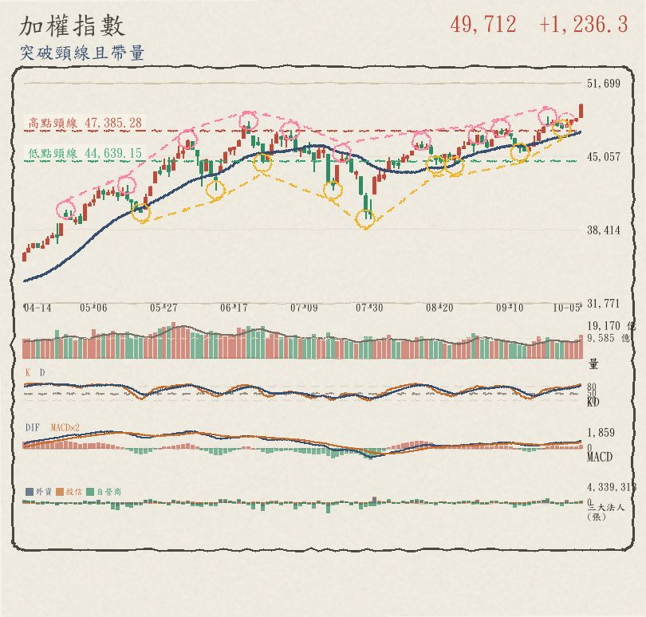
圖說：加權指數日 K（與個股圖相同標記）：黃圈＝轉折低點、粉圈＝轉折高點、虛線小圈＝還沒確認的轉折、藍線＝月線 MA20、水平虛線＝高點／低點頸線。最後一根是資料日當天。
本區塊為公開資料的技術面觀察，不構成投資建議，
不報牌、不預測、不下買賣決策。成交金額為集中市場總成交金額（含 ETF／權證），
與頁首摘要的「上市個股成交金額」口徑不同。標籤是統計，不是評分、也不是推薦。
上市 vs 上櫃（同期快篩）
加權 +2.55% vs 櫃買 +1.30%（同向） → 同向
（兩個市場分開寫，不合併成一個數字；櫃買為 TPEX 公開資料）
櫃買歷史：TPEX 逐日回補 130 根；來源：櫃買中心 www/zh-tw/indexInfo/sectinx（逐日，官方；OpenAPI tpex_index 只回當月）
（TPEX OpenAPI 只回當月，故逐日回補；歷史不足就不算該條均線並標「資料不足」，不用錯數字）
近 20 個交易日大盤狀態回溯（最新在上）（點開看逐日主狀態／量比／量價象限）
用同一支程式回算最近 20 個交易日（主狀態 S1~S8 與量比 20 皆為當日收盤當時的判定，
不是事後調整）；量比 20 未公布的日子寫「—」。
好條件最多的（前 10）
不好條件最多的（前 10）
好條件（8 項）：站上月線、月線向上、底底高、頭頭高、突破頸線、相對大盤強、外資買超、量價攻擊（收紅＋大量）。
不好條件（8 項）：跌破前低、今日下跌、相對大盤弱、在月線之下、量增下跌（出貨）、外資賣超、月線下彎、收盤跌破前一日低點。
兩邊都是同一組資料（日線結構＋當日收盤量價籌碼）算出來的「符合項目數」，只是方向相反；
條件數不是評分、也不是推薦，不構成投資建議。
上升趨勢：底底高 ＋ 頭頭高（13 上市 11／上櫃 2）
量價攻擊（收紅＋大量）（40 上市 30／上櫃 10）
逐檔分析（70 檔）
剛突破前高 成交金額 687.99 億・全榜第 1 名（上市第 1 名）
好條件 7/8：站上月線、月線向上、頭頭高、突破頸線、相對大盤強、外資買超、量價攻擊（收紅＋大量）
不好條件 0/8：無
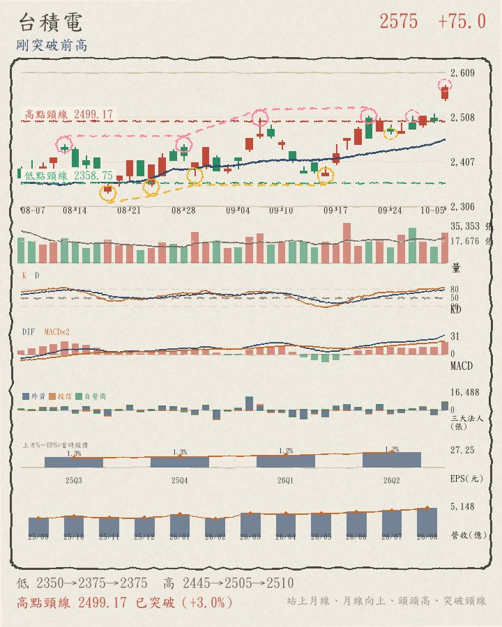
今天帶量收紅、站上月線 2457.5，已站上高點頸線 2499.17，高點還在墊高（但底部沒同步墊高）。
- 月線位置：收盤 2575 在月線 2457.5 之上；5 日線 2508 也在月線之上（短均在上）；月線向上、5 日線向上
- 量能：成交量是 20 日均量的 1.38 倍，比 20 日均量大不少；收紅又量增，量價配合
- 關鍵價位：高點頸線 2499.17 已站上；最近轉折高點 2510（高於 2.6%）；最近轉折低點 2375（高於 8.4%）
- 轉折結構：高點 2445、2505、2510 墊高 2.8%（頭頭高），但低點 2350、2375、2375 沒有同步墊高；還沒確認的轉折低點 09-24 2470；還沒確認的轉折高點 09-30 2510、10-05 2580（圖上虛線小圈）
上升趨勢（底底高＋頭頭高） 成交金額 511.61 億・全榜第 2 名（上市第 2 名）
好條件 4/8：站上月線、月線向上、底底高、頭頭高
不好條件 5/8：今日下跌、相對大盤弱、量增下跌（出貨）、外資賣超、收盤跌破前一日低點
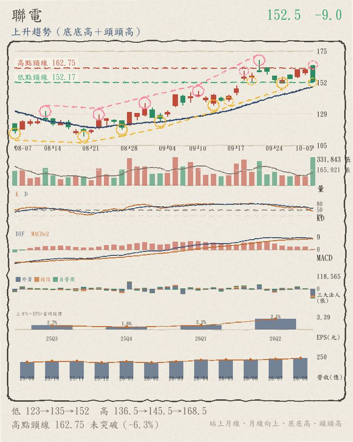
今天帶量收黑、站上月線 148.775，離高點頸線 162.75 還差 6.3%，轉折結構仍是底底高＋頭頭高。
- 月線位置：收盤 152.5 在月線 148.775 之上；5 日線 156.7 也在月線之上（短均在上）；月線向上、5 日線走平或向下
- 量能：成交量是 20 日均量的 1.89 倍，比 20 日均量大不少；收黑卻量增，量價背離
- 關鍵價位：高點頸線 162.75 還沒突破，差 6.3%；最近轉折高點 168.5（低於 9.5%）；最近轉折低點 151.5（高於 0.7%）
- 轉折結構：低點 123、135、151.5 一路墊高 23.2%、高點 136.5、145.5、168.5 也一路墊高 23.4%，是底底高＋頭頭高；還沒確認的轉折低點 09-21 153、10-05 152；還沒確認的轉折高點 09-18 160.5、10-05 165（圖上虛線小圈）
剛突破前高 成交金額 430.59 億・全榜第 3 名（上市第 3 名）
好條件 3/8：站上月線、月線向上、頭頭高
不好條件 3/8：相對大盤弱、量增下跌（出貨）、外資賣超
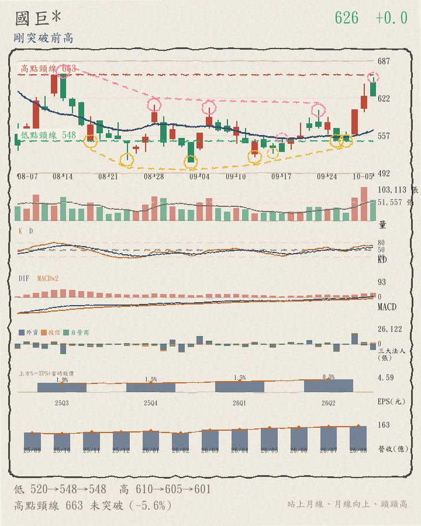
今天帶量收黑、站上月線 566.35，離高點頸線 663 還差 5.6%，高點還在墊高（但底部沒同步墊高）。
- 月線位置：收盤 626 在月線 566.35 之上；5 日線 590 也在月線之上（短均在上）；月線向上、5 日線向上
- 量能：成交量是 20 日均量的 1.58 倍，比 20 日均量大不少；收黑卻量增，量價背離
- 關鍵價位：高點頸線 663 還沒突破，差 5.6%；最近轉折高點 601（高於 4.2%）；最近轉折低點 548（高於 14.2%）
- 轉折結構：高點 610、605、601 墊高 9.5%（頭頭高），但低點 520、548、548 沒有同步墊高；還沒確認的轉折低點 09-16 526；還沒確認的轉折高點 09-17 553、10-05 658（圖上虛線小圈）
高點墊高、底部不穩 成交金額 393.99 億・全榜第 4 名（上市第 4 名）
好條件 4/8：站上月線、月線向上、頭頭高、突破頸線
不好條件 4/8：今日下跌、相對大盤弱、量增下跌（出貨）、外資賣超
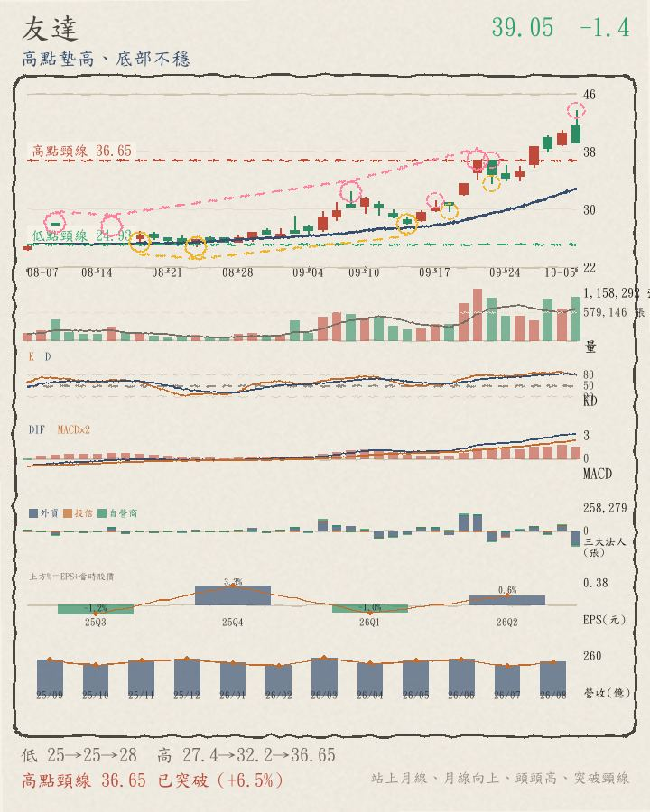
今天帶量收黑、站上月線 32.683，已站上高點頸線 36.65，高點還在墊高（但底部沒同步墊高）。
- 月線位置：收盤 39.05 在月線 32.683 之上；5 日線 38.28 也在月線之上（短均在上）；月線向上、5 日線向上
- 量能：成交量是 20 日均量的 1.76 倍，比 20 日均量大不少；收黑卻量增，量價背離
- 關鍵價位：高點頸線 36.65 已站上；最近轉折高點 36.65（高於 6.5%）；最近轉折低點 27.75（高於 40.7%）
- 轉折結構：高點 27.4、32.2、36.65 墊高 33.8%（頭頭高），但低點 25.25、24.6、27.75 沒有同步墊高；還沒確認的轉折低點 09-18 29.5、09-23 33.4；還沒確認的轉折高點 09-23 36.65、10-05 43.55（圖上虛線小圈）
高點墊高、底部不穩 成交金額 386.07 億・全榜第 5 名（上市第 5 名）
好條件 6/8：站上月線、月線向上、頭頭高、相對大盤強、外資買超、量價攻擊（收紅＋大量）
不好條件 0/8：無
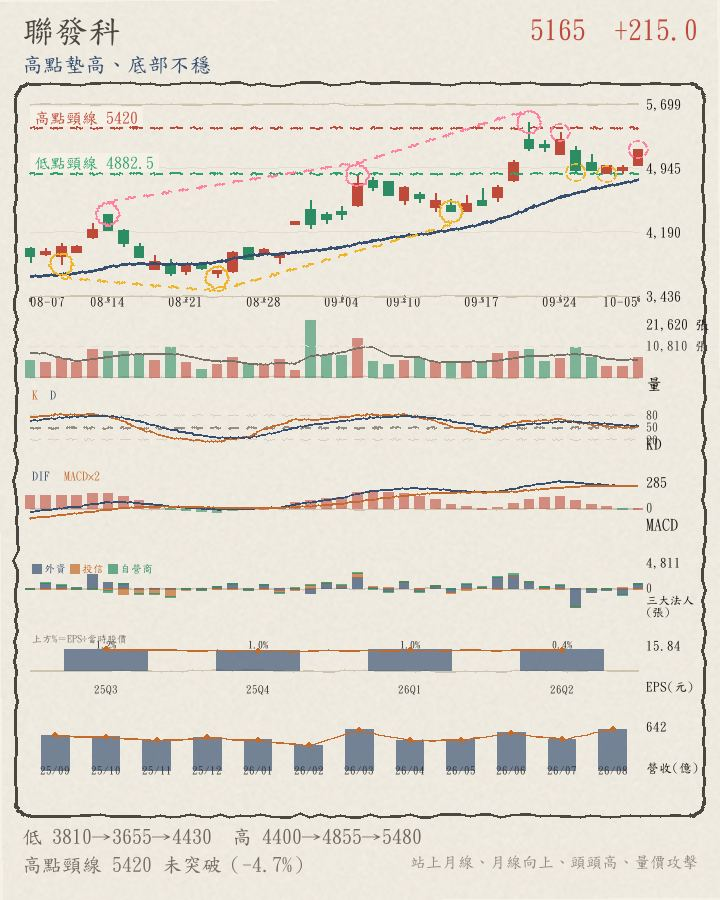
今天收紅、站上月線 4806.5，離高點頸線 5420 還差 4.7%，高點還在墊高（但底部沒同步墊高）。
- 月線位置：收盤 5165 在月線 4806.5 之上；5 日線 4985 也在月線之上（短均在上）；月線向上、5 日線走平或向下
- 量能：成交量是 20 日均量的 1.02 倍，跟 20 日均量差不多
- 關鍵價位：高點頸線 5420 還沒突破，差 4.7%；最近轉折高點 5480（低於 5.7%）；最近轉折低點 4430（高於 16.6%）
- 轉折結構：高點 4400、4855、5480 墊高 24.5%（頭頭高），但低點 3810、3655、4430 沒有同步墊高；還沒確認的轉折低點 09-29 4890、10-01 4875；還沒確認的轉折高點 09-24 5360、10-05 5165（圖上虛線小圈）
剛突破前高 成交金額 369.38 億・全榜第 6 名（上市第 6 名）
好條件 6/8：站上月線、月線向上、頭頭高、突破頸線、外資買超、量價攻擊（收紅＋大量）
不好條件 1/8：相對大盤弱
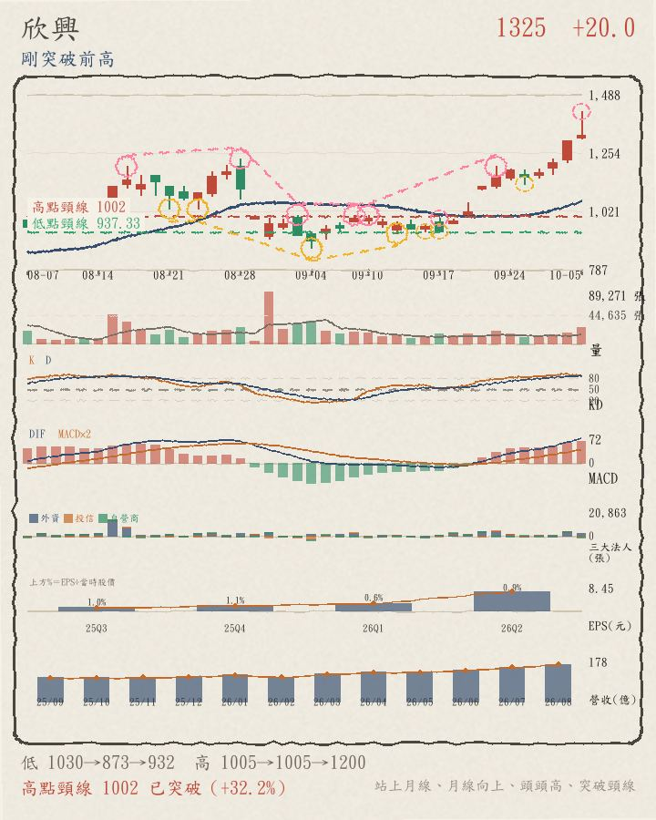
今天帶量收紅、站上月線 1062.1，已站上高點頸線 1002，高點還在墊高（但底部沒同步墊高）。
- 月線位置：收盤 1325 在月線 1062.1 之上；5 日線 1237 也在月線之上（短均在上）；月線向上、5 日線向上
- 量能：成交量是 20 日均量的 1.60 倍，比 20 日均量大不少；收紅又量增，量價配合
- 關鍵價位：高點頸線 1002 已站上；最近轉折高點 1200（高於 10.4%）；最近轉折低點 932（高於 42.2%）
- 轉折結構：高點 1005、1005、1200 墊高 18.3%（頭頭高），但低點 1030、873、932 沒有同步墊高；還沒確認的轉折低點 09-17 940、09-29 1130；還沒確認的轉折高點 09-17 993、10-05 1420（圖上虛線小圈）
底部墊高、突破前高 成交金額 362.48 億・全榜第 7 名（上市第 7 名）
好條件 6/8：站上月線、月線向上、底底高、頭頭高、突破頸線、量價攻擊（收紅＋大量）
不好條件 2/8：相對大盤弱、外資賣超
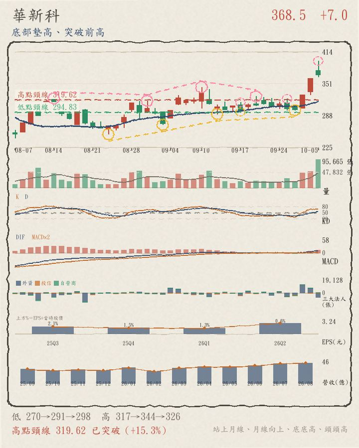
今天帶量收紅、站上月線 316.1，已站上高點頸線 319.62，轉折結構仍是底底高＋頭頭高。
- 月線位置：收盤 368.5 在月線 316.1 之上；5 日線 332.1 也在月線之上（短均在上）；月線向上、5 日線向上
- 量能：成交量是 20 日均量的 3.33 倍，比 20 日均量大不少；收紅又量增，量價配合
- 關鍵價位：高點頸線 319.62 已站上；最近轉折高點 326（高於 13.0%）；最近轉折低點 298.5（高於 23.5%）
- 轉折結構：低點 270、291、298.5 一路墊高 10.6%、高點 317、344、326 也一路墊高 21.5%，是底底高＋頭頭高；還沒確認的轉折低點 09-17 295；還沒確認的轉折高點 09-29 321、10-05 396（圖上虛線小圈）
高點墊高、底部不穩 成交金額 353.23 億・全榜第 8 名（上市第 8 名）
好條件 7/8：站上月線、月線向上、頭頭高、突破頸線、相對大盤強、外資買超、量價攻擊（收紅＋大量）
不好條件 0/8：無
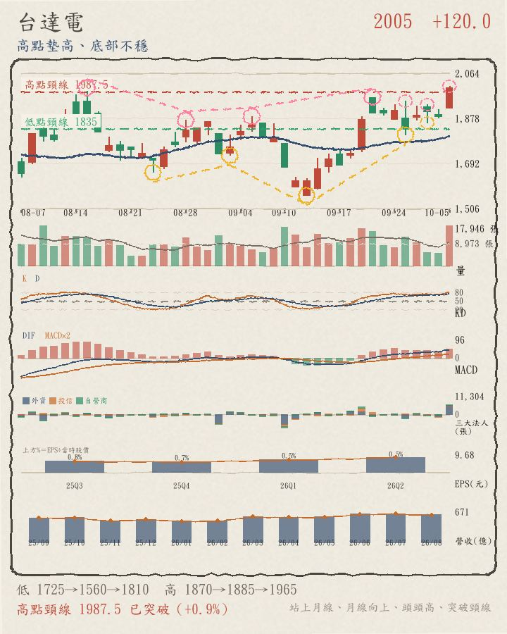
今天帶量收紅、站上月線 1804.75，已站上高點頸線 1987.5，高點還在墊高（但底部沒同步墊高）。
- 月線位置：收盤 2005 在月線 1804.75 之上；5 日線 1904 也在月線之上（短均在上）；月線向上、5 日線向上
- 量能：成交量是 20 日均量的 1.71 倍，比 20 日均量大不少；收紅又量增，量價配合
- 關鍵價位：高點頸線 1987.5 已站上；最近轉折高點 1965（高於 2.0%）；最近轉折低點 1810（高於 10.8%）
- 轉折結構：高點 1870、1885、1965 墊高 5.1%（頭頭高），但低點 1725、1560、1810 沒有同步墊高；還沒確認的轉折低點 10-01 1860；還沒確認的轉折高點 10-01 1935、10-05 2010（圖上虛線小圈）
底部墊高、突破前高 成交金額 329.67 億・全榜第 9 名（上市第 9 名）
好條件 8/8：站上月線、月線向上、底底高、頭頭高、突破頸線、相對大盤強、外資買超、量價攻擊（收紅＋大量）
不好條件 0/8：無
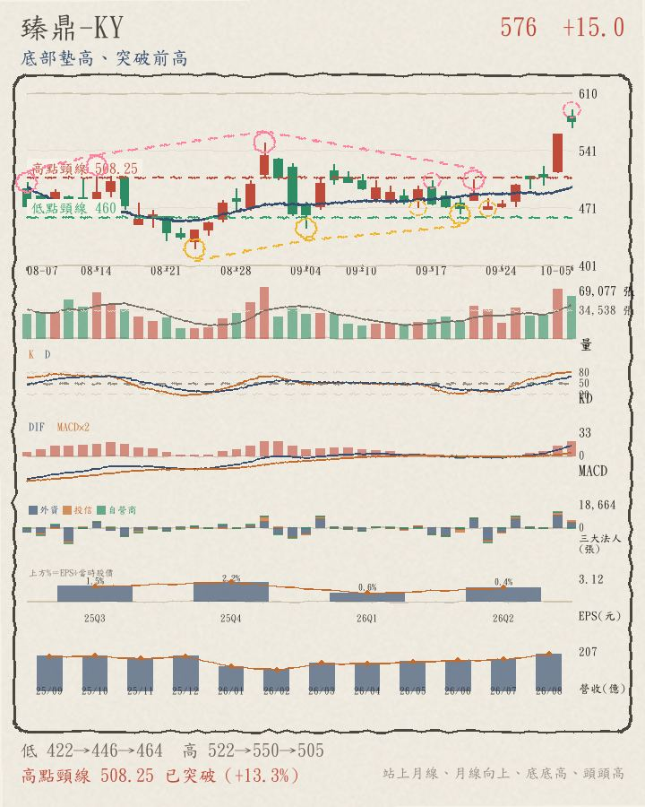
今天帶量收紅、站上月線 496.5，已站上高點頸線 508.25，轉折結構仍是底底高＋頭頭高。
- 月線位置：收盤 576 在月線 496.5 之上；5 日線 530.5 也在月線之上（短均在上）；月線向上、5 日線向上
- 量能：成交量是 20 日均量的 1.91 倍，比 20 日均量大不少；收紅又量增，量價配合
- 關鍵價位：高點頸線 508.25 已站上；最近轉折高點 505（高於 14.1%）；最近轉折低點 463.5（高於 24.3%）
- 轉折結構：低點 421.5、446.5、463.5 一路墊高 10.0%、高點 522、550、505 也一路墊高 16.8%，是底底高＋頭頭高；還沒確認的轉折低點 09-16 471、09-23 470；還沒確認的轉折高點 09-17 504、10-05 590（圖上虛線小圈）
剛突破前高 成交金額 327.95 億・全榜第 10 名（上市第 10 名）
好條件 7/8：站上月線、月線向上、頭頭高、突破頸線、相對大盤強、外資買超、量價攻擊（收紅＋大量）
不好條件 0/8：無
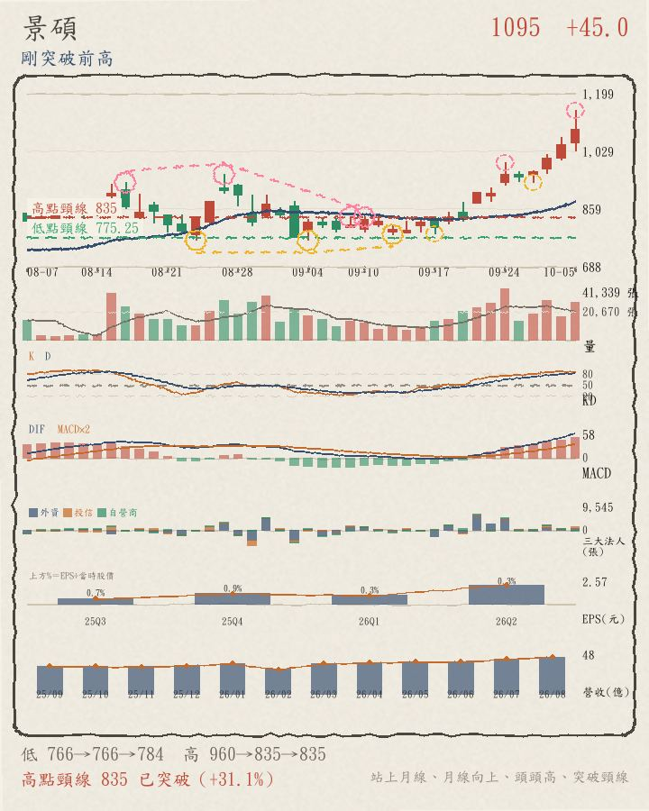
今天帶量收紅、站上月線 881.35，已站上高點頸線 835，高點還在墊高（但底部沒同步墊高）。
- 月線位置：收盤 1095 在月線 881.35 之上；5 日線 1016 也在月線之上（短均在上）；月線向上、5 日線向上
- 量能：成交量是 20 日均量的 1.61 倍，比 20 日均量大不少；收紅又量增，量價配合
- 關鍵價位：高點頸線 835 已站上；最近轉折高點 835（高於 31.1%）；最近轉折低點 784（高於 39.7%）
- 轉折結構：高點 960、835、835 墊高 37.7%（頭頭高），但低點 766、766、784 沒有同步墊高；還沒確認的轉折低點 09-17 785、09-30 937；還沒確認的轉折高點 09-24 996、10-05 1150（圖上虛線小圈）
剛突破前高 成交金額 252.92 億・全榜第 12 名（上市第 11 名）
好條件 7/8：站上月線、月線向上、頭頭高、突破頸線、相對大盤強、外資買超、量價攻擊（收紅＋大量）
不好條件 0/8：無
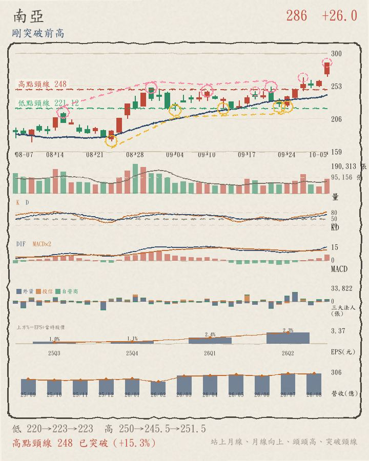
今天帶量收紅、站上月線 239.925，已站上高點頸線 248，高點還在墊高（但底部沒同步墊高）。
- 月線位置：收盤 286 在月線 239.925 之上；5 日線 260.5 也在月線之上（短均在上）；月線向上、5 日線向上
- 量能：成交量是 20 日均量的 1.35 倍，比 20 日均量大不少；收紅又量增，量價配合
- 關鍵價位：高點頸線 248 已站上；最近轉折高點 251.5（高於 13.7%）；最近轉折低點 223（高於 28.3%）
- 轉折結構：高點 250、245.5、251.5 墊高 13.7%（頭頭高），但低點 220.5、223、223 沒有同步墊高；還沒確認的轉折高點 09-30 265、10-05 286（圖上虛線小圈）
底部墊高、突破前高 成交金額 227.34 億・全榜第 14 名（上市第 12 名）
好條件 7/8：站上月線、月線向上、底底高、頭頭高、突破頸線、外資買超、量價攻擊（收紅＋大量）
不好條件 1/8：相對大盤弱
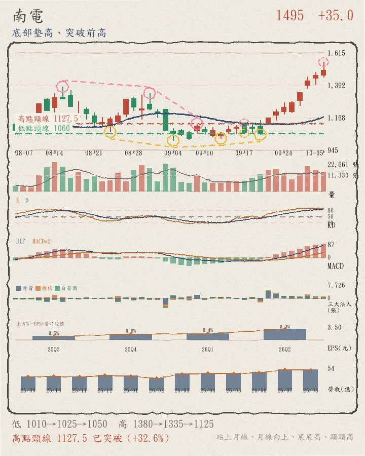
今天帶量收紅、站上月線 1173，已站上高點頸線 1127.5，轉折結構仍是底底高＋頭頭高。
- 月線位置：收盤 1495 在月線 1173 之上；5 日線 1397 也在月線之上（短均在上）；月線向上、5 日線向上
- 量能：成交量是 20 日均量的 1.29 倍，比 20 日均量大不少；收紅又量增，量價配合
- 關鍵價位：高點頸線 1127.5 已站上；最近轉折高點 1125（高於 32.9%）；最近轉折低點 1050（高於 42.4%）
- 轉折結構：低點 1010、1025、1050 一路墊高 4.0%、高點 1380、1335、1125 也一路墊高 37.8%，是底底高＋頭頭高；還沒確認的轉折低點 09-17 1060；還沒確認的轉折高點 09-17 1130、10-05 1550（圖上虛線小圈）
剛突破前高 成交金額 222.29 億・全榜第 15 名（上市第 13 名）
好條件 4/8：站上月線、月線向上、頭頭高、外資買超
不好條件 1/8：相對大盤弱
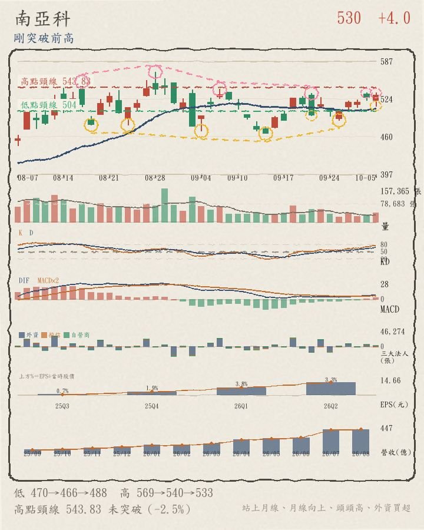
今天收紅、但成交量比平均少、站上月線 507.5，離高點頸線 543.83 還差 2.5%，高點還在墊高（但底部沒同步墊高）。
- 月線位置：收盤 530 在月線 507.5 之上；5 日線 520 也在月線之上（短均在上）；月線向上、5 日線向上
- 量能：成交量是 20 日均量的 0.86 倍，比 20 日均量少一些；收紅但量縮，量價背離
- 關鍵價位：高點頸線 543.83 還沒突破，差 2.5%；最近轉折高點 533（低於 0.6%）；最近轉折低點 488（高於 8.6%）
- 轉折結構：高點 569、540、533 墊高 0.2%（頭頭高），但低點 470、465.5、488 沒有同步墊高；還沒確認的轉折低點 09-22 496、10-05 512；還沒確認的轉折高點 10-02 534、10-05 534（圖上虛線小圈）
剛突破前高 成交金額 195.49 億・全榜第 19 名（上市第 14 名）
好條件 3/8：站上月線、月線向上、頭頭高
不好條件 4/8：今日下跌、相對大盤弱、量增下跌（出貨）、外資賣超
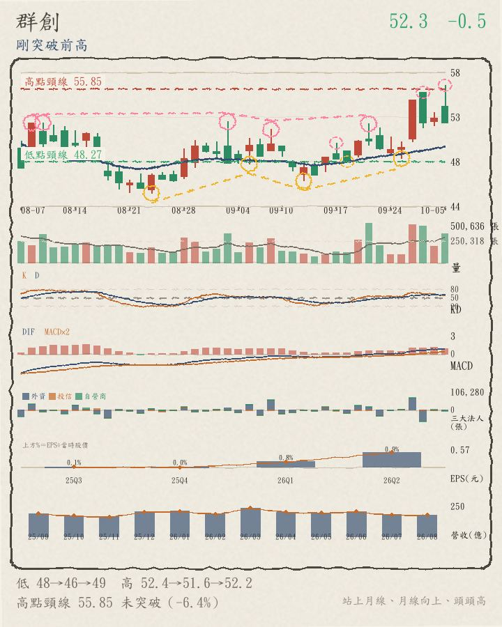
今天帶量收黑、站上月線 49.81，離高點頸線 55.85 還差 6.4%，高點還在墊高（但底部沒同步墊高）。
- 月線位置：收盤 52.3 在月線 49.81 之上；5 日線 52.37 也在月線之上（短均在上）；月線向上、5 日線向上
- 量能：成交量是 20 日均量的 1.63 倍，比 20 日均量大不少；收黑卻量增，量價背離
- 關鍵價位：高點頸線 55.85 還沒突破，差 6.4%；最近轉折高點 52.2（高於 0.2%）；最近轉折低點 48.55（高於 7.7%）
- 轉折結構：高點 52.4、51.6、52.2 墊高 7.7%（頭頭高），但低點 48、46.25、48.55 沒有同步墊高；還沒確認的轉折低點 09-18 48.25；還沒確認的轉折高點 10-01 55.5、10-05 56.2（圖上虛線小圈）
剛突破前高 成交金額 176.33 億・全榜第 20 名（上市第 15 名）
好條件 4/8：站上月線、頭頭高、相對大盤強、量價攻擊（收紅＋大量）
不好條件 2/8：外資賣超、月線下彎
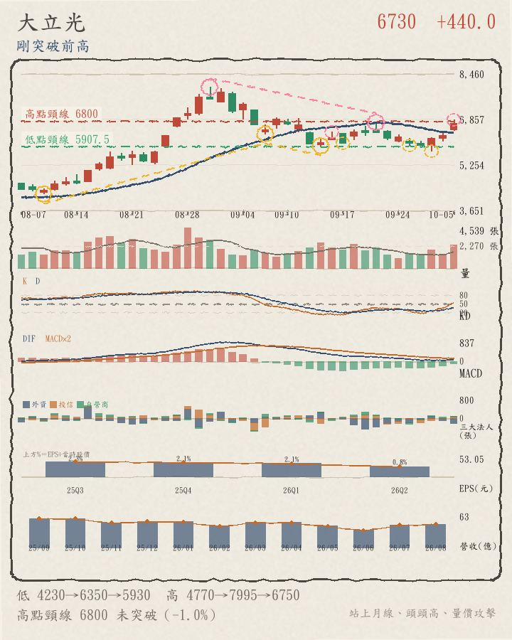
今天帶量收紅、站上月線 6398.25，離高點頸線 6800 還差 1.0%，高點還在墊高（但底部沒同步墊高）。
- 月線位置：收盤 6730 在月線 6398.25 之上；5 日線 6238 也在月線之下（短均在下）；月線走平或向下、5 日線走平或向下
- 量能：成交量是 20 日均量的 1.42 倍，比 20 日均量大不少；收紅又量增，量價配合
- 關鍵價位：高點頸線 6800 還沒突破，差 1.0%；最近轉折高點 6750（低於 0.3%）；最近轉折低點 5930（高於 13.5%）
- 轉折結構：高點 4770、7995、6750 墊高 1.5%（頭頭高），但低點 4230、6350、5930 沒有同步墊高；還沒確認的轉折低點 09-29 5940、10-01 5740；還沒確認的轉折高點 09-16 6415、10-05 6850（圖上虛線小圈）
剛突破前高 成交金額 163.56 億・全榜第 21 名（上市第 16 名）
好條件 6/8：站上月線、月線向上、頭頭高、相對大盤強、外資買超、量價攻擊（收紅＋大量）
不好條件 0/8：無
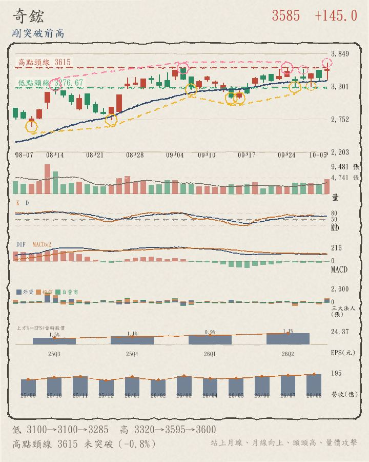
今天帶量收紅、站上月線 3395，離高點頸線 3615 還差 0.8%，高點還在墊高（但底部沒同步墊高）。
- 月線位置：收盤 3585 在月線 3395 之上；5 日線 3474 也在月線之上（短均在上）；月線向上、5 日線向上
- 量能：成交量是 20 日均量的 1.59 倍，比 20 日均量大不少；收紅又量增，量價配合
- 關鍵價位：高點頸線 3615 還沒突破，差 0.8%；最近轉折高點 3600（低於 0.4%）；最近轉折低點 3285（高於 9.1%）
- 轉折結構：高點 3320、3595、3600 墊高 2.5%（頭頭高），但低點 3100、3100、3285 沒有同步墊高；還沒確認的轉折低點 10-01 3300；還沒確認的轉折高點 09-30 3575、10-05 3690（圖上虛線小圈）
剛突破前高 成交金額 162.26 億・全榜第 22 名（上市第 17 名）
好條件 4/8：站上月線、月線向上、頭頭高、外資買超
不好條件 1/8：相對大盤弱
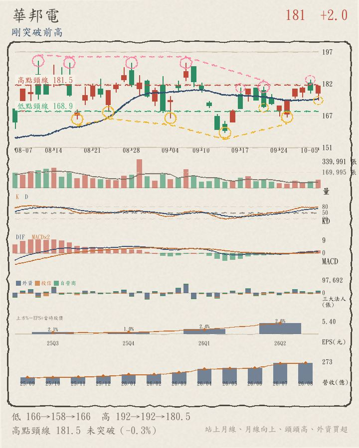
今天收紅、但成交量比平均少、站上月線 174.825，離高點頸線 181.5 還差 0.3%，高點還在墊高（但底部沒同步墊高）。
- 月線位置：收盤 181 在月線 174.825 之上；5 日線 178.7 也在月線之上（短均在上）；月線向上、5 日線向上
- 量能：成交量是 20 日均量的 0.93 倍，比 20 日均量少一些；收紅但量縮，量價背離
- 關鍵價位：高點頸線 181.5 還沒突破，差 0.3%；最近轉折高點 180.5（高於 0.3%）；最近轉折低點 166（高於 9.0%）
- 轉折結構：高點 192、192、180.5 墊高 1.9%（頭頭高），但低點 165.5、158.5、166 沒有同步墊高；還沒確認的轉折低點 09-22 170.5、10-05 174；還沒確認的轉折高點 09-17 180、10-02 184（圖上虛線小圈）
區間或轉弱 成交金額 147.02 億・全榜第 23 名（上市第 18 名）
好條件 2/8：站上月線、量價攻擊（收紅＋大量）
不好條件 3/8：相對大盤弱、外資賣超、月線下彎
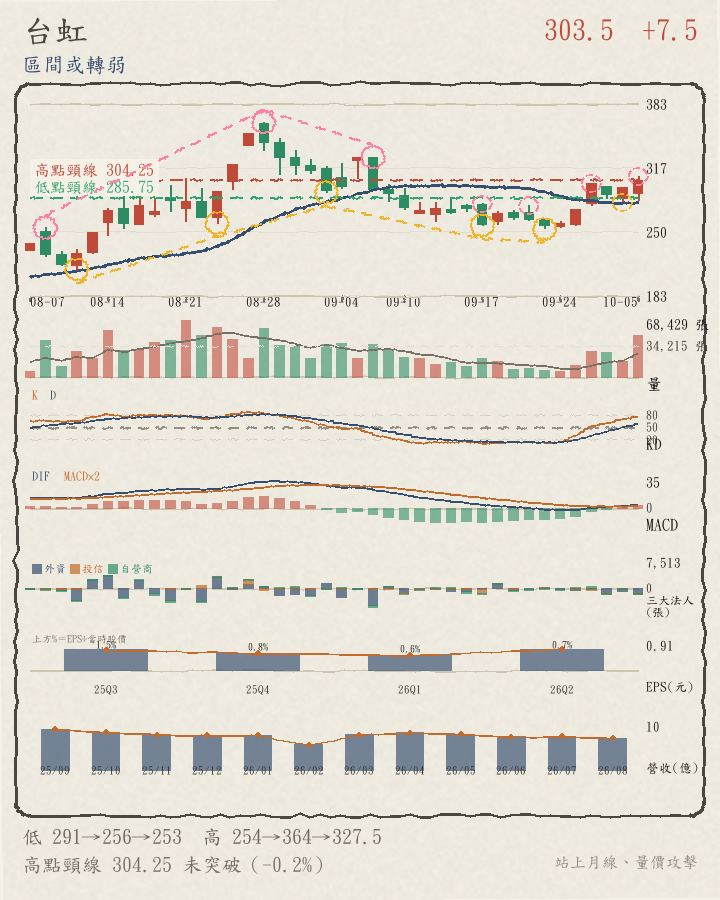
今天帶量收紅、站上月線 280.275，離高點頸線 304.25 還差 0.2%，轉折還沒走出明顯方向。
- 月線位置：收盤 303.5 在月線 280.275 之上；5 日線 292.4 也在月線之上（短均在上）；月線走平或向下、5 日線向上
- 量能：成交量是 20 日均量的 2.29 倍，比 20 日均量大不少；收紅又量增，量價配合
- 關鍵價位：高點頸線 304.25 還沒突破，差 0.2%；最近轉折高點 327.5（低於 7.3%）；最近轉折低點 253（高於 20.0%）
- 轉折結構：低點 291、256.5、253 與高點 254、364、327.5 都沒有明顯遞增，屬於區間震盪或轉弱；還沒確認的轉折低點 10-02 280.5；還沒確認的轉折高點 09-30 300.5、10-05 308（圖上虛線小圈）
剛突破前高 成交金額 145.9 億・全榜第 24 名（上市第 19 名）
好條件 7/8：站上月線、月線向上、頭頭高、突破頸線、相對大盤強、外資買超、量價攻擊（收紅＋大量）
不好條件 0/8：無
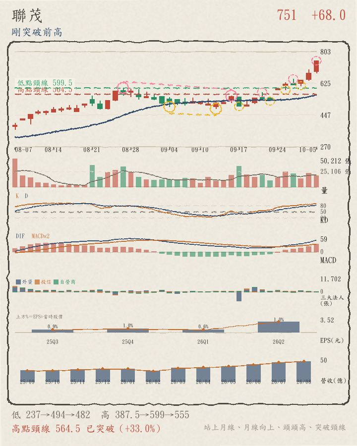
今天帶量收紅、站上月線 560.75，已站上高點頸線 564.5，高點還在墊高（但底部沒同步墊高）。
- 月線位置：收盤 751 在月線 560.75 之上；5 日線 663.8 也在月線之上（短均在上）；月線向上、5 日線向上
- 量能：成交量是 20 日均量的 1.16 倍，比 20 日均量大不少；收紅又量增，量價配合
- 關鍵價位：高點頸線 564.5 已站上；最近轉折高點 555（高於 35.3%）；最近轉折低點 482（高於 55.8%）
- 轉折結構：高點 387.5、599、555 墊高 35.3%（頭頭高），但低點 237、493.5、482 沒有同步墊高；還沒確認的轉折低點 09-29 588、10-01 611；還沒確認的轉折高點 09-30 649、10-05 751（圖上虛線小圈）
底部墊高、未過前高 成交金額 133.98 億・全榜第 25 名（上市第 20 名）
好條件 5/8：站上月線、月線向上、底底高、外資買超、量價攻擊（收紅＋大量）
不好條件 1/8：相對大盤弱
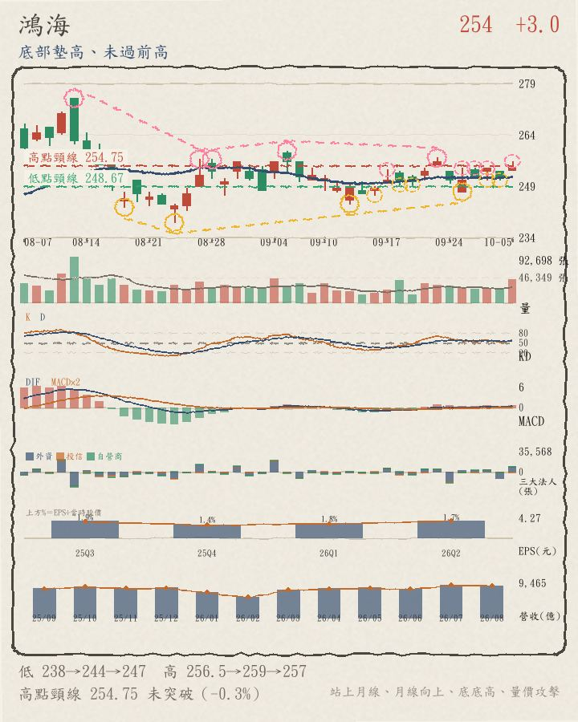
今天帶量收紅、站上月線 251.45，離高點頸線 254.75 還差 0.3%，底部還在墊高（但高點沒同步創高）。
- 月線位置：收盤 254 在月線 251.45 之上；5 日線 252.2 也在月線之上（短均在上）；月線向上、5 日線向上
- 量能：成交量是 20 日均量的 1.57 倍，比 20 日均量大不少；收紅又量增，量價配合
- 關鍵價位：高點頸線 254.75 還沒突破，差 0.3%；最近轉折高點 257（低於 1.2%）；最近轉折低點 247（高於 2.8%）
- 轉折結構：低點 238、243.5、247 墊高 3.8%（底底高），但高點 256.5、259、257 沒有同步創高；還沒確認的轉折低點 10-01 250.5、10-02 250.5；還沒確認的轉折高點 10-01 254、10-05 256（圖上虛線小圈）
上升趨勢（底底高＋頭頭高） 成交金額 133.54 億・全榜第 26 名（上市第 21 名）
好條件 8/8：站上月線、月線向上、底底高、頭頭高、突破頸線、相對大盤強、外資買超、量價攻擊（收紅＋大量）
不好條件 0/8：無
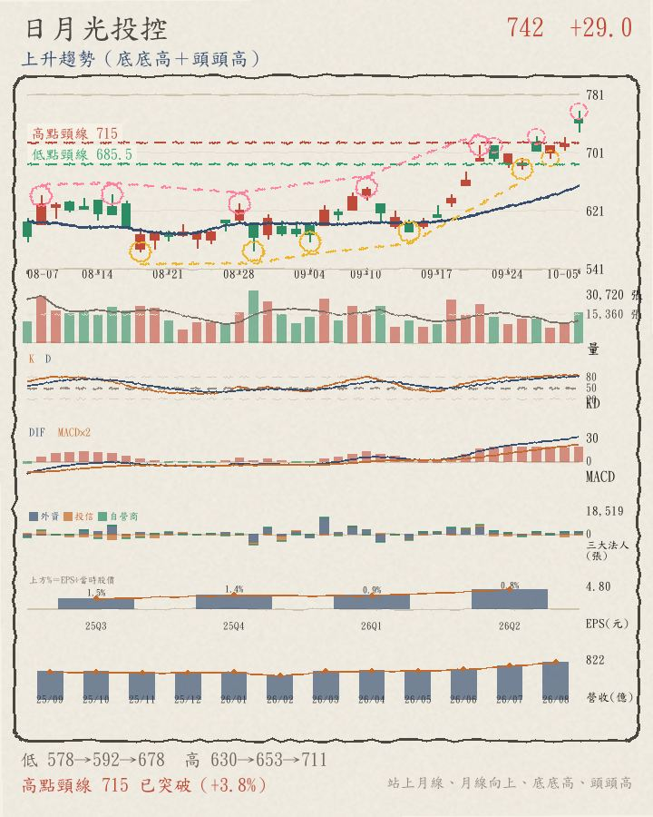
今天帶量收紅、站上月線 654.95，已站上高點頸線 715，轉折結構仍是底底高＋頭頭高。
- 月線位置：收盤 742 在月線 654.95 之上；5 日線 711 也在月線之上（短均在上）；月線向上、5 日線向上
- 量能：成交量是 20 日均量的 1.17 倍，比 20 日均量大不少；收紅又量增，量價配合
- 關鍵價位：高點頸線 715 已站上；最近轉折高點 711（高於 4.4%）；最近轉折低點 678（高於 9.4%）
- 轉折結構：低點 578、592、678 一路墊高 17.3%、高點 630、653、711 也一路墊高 12.9%，是底底高＋頭頭高；還沒確認的轉折低點 10-01 693；還沒確認的轉折高點 09-30 723、10-05 758（圖上虛線小圈）
高點墊高、底部不穩 成交金額 132.72 億・全榜第 27 名（上市第 22 名）
好條件 4/8：站上月線、月線向上、頭頭高、外資買超
不好條件 4/8：今日下跌、相對大盤弱、量增下跌（出貨）、收盤跌破前一日低點
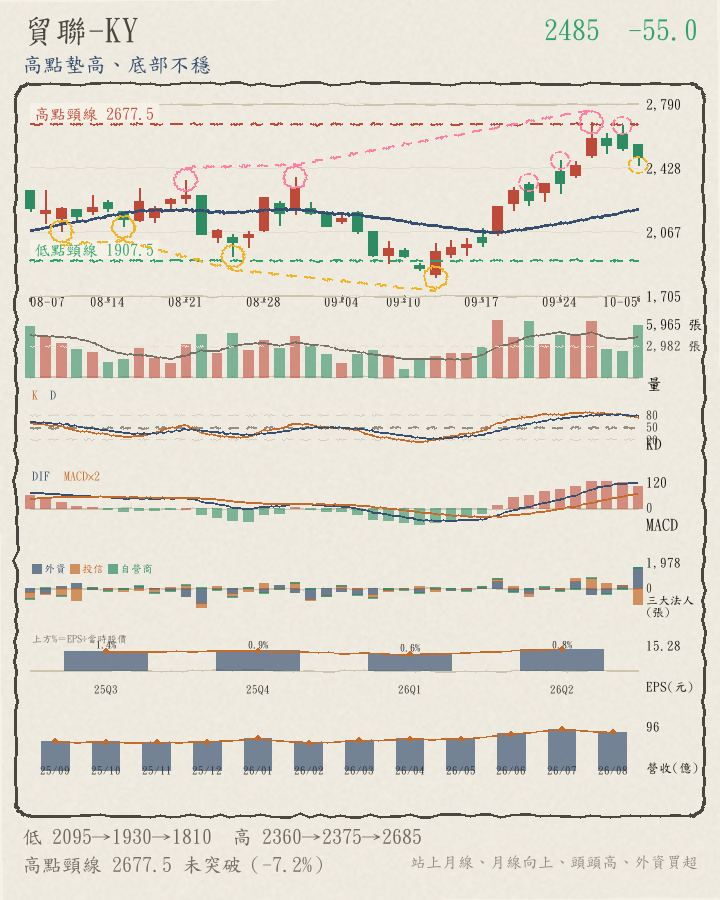
今天帶量收黑、站上月線 2196.25，離高點頸線 2677.5 還差 7.2%，高點還在墊高（但底部沒同步墊高）。
- 月線位置：收盤 2485 在月線 2196.25 之上；5 日線 2524 也在月線之上（短均在上）；月線向上、5 日線向上
- 量能：成交量是 20 日均量的 1.70 倍，比 20 日均量大不少；收黑卻量增，量價背離
- 關鍵價位：高點頸線 2677.5 還沒突破，差 7.2%；最近轉折高點 2685（低於 7.4%）；最近轉折低點 1810（高於 37.3%）
- 轉折結構：高點 2360、2375、2685 墊高 13.8%（頭頭高），但低點 2095、1930、1810 沒有同步墊高；還沒確認的轉折低點 10-05 2445；還沒確認的轉折高點 09-24 2470、10-02 2670（圖上虛線小圈）
剛突破前高 成交金額 132.03 億・全榜第 28 名（上市第 23 名）
好條件 6/8：站上月線、頭頭高、突破頸線、相對大盤強、外資買超、量價攻擊（收紅＋大量）
不好條件 1/8：月線下彎
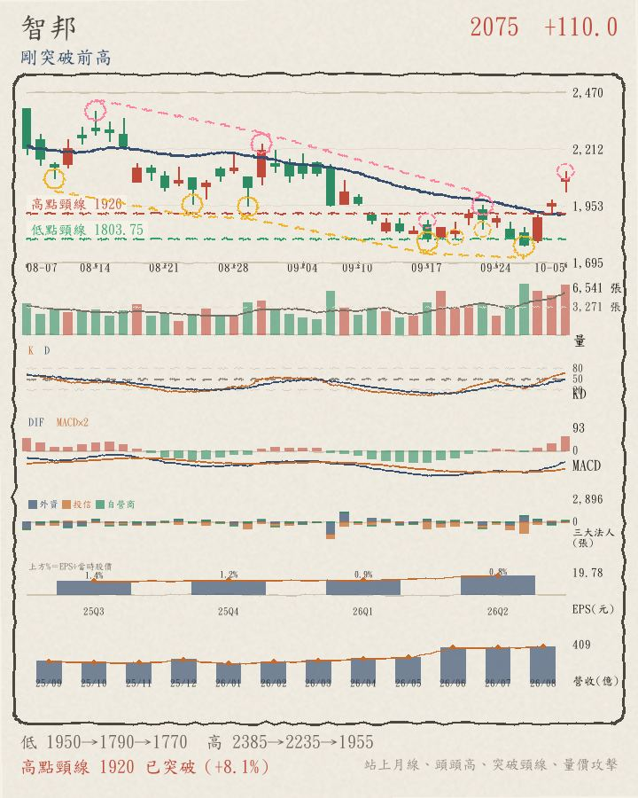
今天帶量收紅、站上月線 1914.75，已站上高點頸線 1920，高點還在墊高（但底部沒同步墊高）。
- 月線位置：收盤 2075 在月線 1914.75 之上；5 日線 1905 也在月線之下（短均在下）；月線走平或向下、5 日線向上
- 量能：成交量是 20 日均量的 1.74 倍，比 20 日均量大不少；收紅又量增，量價配合
- 關鍵價位：高點頸線 1920 已站上；最近轉折高點 1955（高於 6.1%）；最近轉折低點 1770（高於 17.2%）
- 轉折結構：高點 2385、2235、1955 墊高 7.9%（頭頭高），但低點 1950、1790、1770 沒有同步墊高；還沒確認的轉折低點 09-21 1810、09-23 1845；還沒確認的轉折高點 09-17 1885、10-05 2110（圖上虛線小圈）
底部墊高、突破前高 成交金額 125.19 億・全榜第 29 名（上市第 24 名）
好條件 7/8：站上月線、底底高、頭頭高、突破頸線、相對大盤強、外資買超、量價攻擊（收紅＋大量）
不好條件 1/8：月線下彎
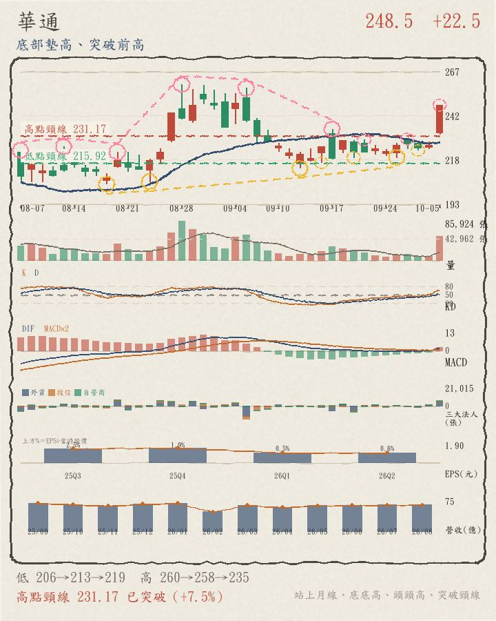
今天帶量收紅、站上月線 227.45，已站上高點頸線 231.17，轉折結構仍是底底高＋頭頭高。
- 月線位置：收盤 248.5 在月線 227.45 之上；5 日線 230.3 也在月線之上（短均在上）；月線走平或向下、5 日線向上
- 量能：成交量是 20 日均量的 2.55 倍，比 20 日均量大不少；收紅又量增，量價配合
- 關鍵價位：高點頸線 231.17 已站上；最近轉折高點 235（高於 5.7%）；最近轉折低點 219（高於 13.5%）
- 轉折結構：低點 205.5、213、219 一路墊高 6.6%、高點 260、258、235 也一路墊高 5.7%，是底底高＋頭頭高；還沒確認的轉折低點 09-21 219、10-01 223；還沒確認的轉折高點 09-30 229.5、10-05 248.5（圖上虛線小圈）
剛突破前高 成交金額 124.64 億・全榜第 30 名（上市第 25 名）
好條件 4/8：站上月線、月線向上、頭頭高、突破頸線
不好條件 4/8：今日下跌、相對大盤弱、量增下跌（出貨）、外資賣超
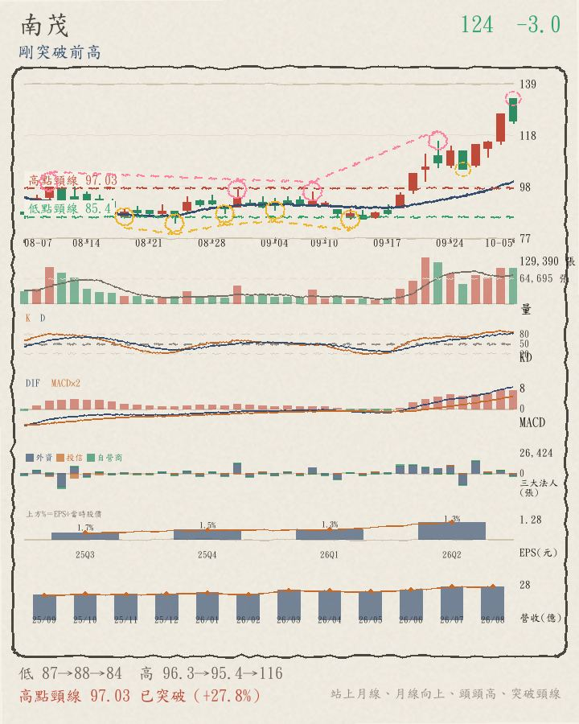
今天帶量收黑、站上月線 99.63，已站上高點頸線 97.03，高點還在墊高（但底部沒同步墊高）。
- 月線位置：收盤 124 在月線 99.63 之上；5 日線 117.1 也在月線之上（短均在上）；月線向上、5 日線向上
- 量能：成交量是 20 日均量的 2.14 倍，比 20 日均量大不少；收黑卻量增，量價背離
- 關鍵價位：高點頸線 97.03 已站上；最近轉折高點 116（高於 6.9%）；最近轉折低點 84.3（高於 47.1%）
- 轉折結構：高點 96.3、95.4、116 墊高 14.7%（頭頭高），但低點 86.6、87.9、84.3 沒有同步墊高；還沒確認的轉折低點 09-29 104.5；還沒確認的轉折高點 10-05 133（圖上虛線小圈）
世芯-KY 3661 上市
3950 +140.0
剛突破前高 成交金額 123.04 億・全榜第 31 名（上市第 26 名）
好條件 5/8：站上月線、頭頭高、相對大盤強、外資買超、量價攻擊（收紅＋大量）
不好條件 1/8：月線下彎
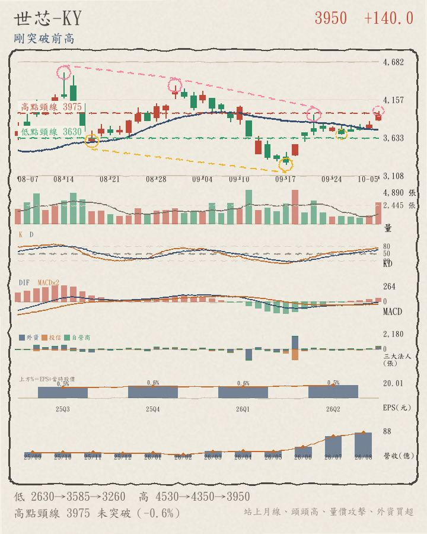
今天帶量收紅、站上月線 3744.25，離高點頸線 3975 還差 0.6%，高點還在墊高（但底部沒同步墊高）。
- 月線位置：收盤 3950 在月線 3744.25 之上；5 日線 3790 也在月線之上（短均在上）；月線走平或向下、5 日線向上
- 量能：成交量是 20 日均量的 1.40 倍，比 20 日均量大不少；收紅又量增，量價配合
- 關鍵價位：高點頸線 3975 還沒突破，差 0.6%；最近轉折高點 3950（高於 0.0%）；最近轉折低點 3260（高於 21.2%）
- 轉折結構：高點 4530、4350、3950 墊高 1.3%（頭頭高），但低點 2630、3585、3260 沒有同步墊高；還沒確認的轉折低點 09-29 3675；還沒確認的轉折高點 10-05 4000（圖上虛線小圈）
剛突破前高 成交金額 104.09 億・全榜第 33 名（上市第 27 名）
好條件 7/8：站上月線、月線向上、頭頭高、突破頸線、相對大盤強、外資買超、量價攻擊（收紅＋大量）
不好條件 0/8：無
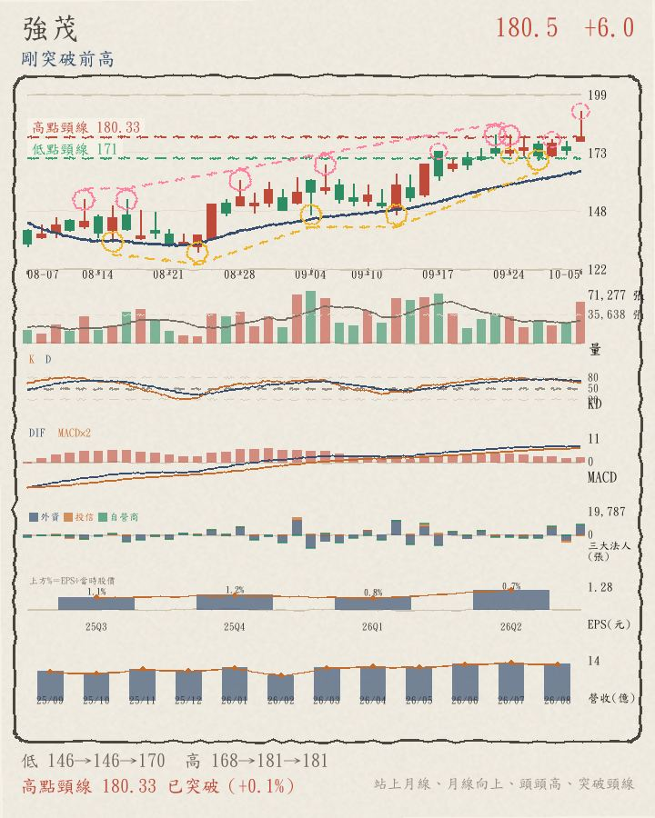
今天帶量收紅、站上月線 165.1，已站上高點頸線 180.33，高點還在墊高（但底部沒同步墊高）。
- 月線位置：收盤 180.5 在月線 165.1 之上；5 日線 176 也在月線之上（短均在上）；月線向上、5 日線向上
- 量能：成交量是 20 日均量的 1.35 倍，比 20 日均量大不少；收紅又量增，量價配合
- 關鍵價位：高點頸線 180.33 已站上；最近轉折高點 181（低於 0.3%）；最近轉折低點 170（高於 6.2%）
- 轉折結構：高點 168、181、181 墊高 5.8%（頭頭高），但低點 146、146、170 沒有同步墊高；還沒確認的轉折低點 09-24 172；還沒確認的轉折高點 10-01 179、10-05 191.5（圖上虛線小圈）
剛突破前高 成交金額 96.22 億・全榜第 34 名（上市第 28 名）
好條件 4/8：站上月線、月線向上、頭頭高、突破頸線
不好條件 3/8：今日下跌、相對大盤弱、外資賣超
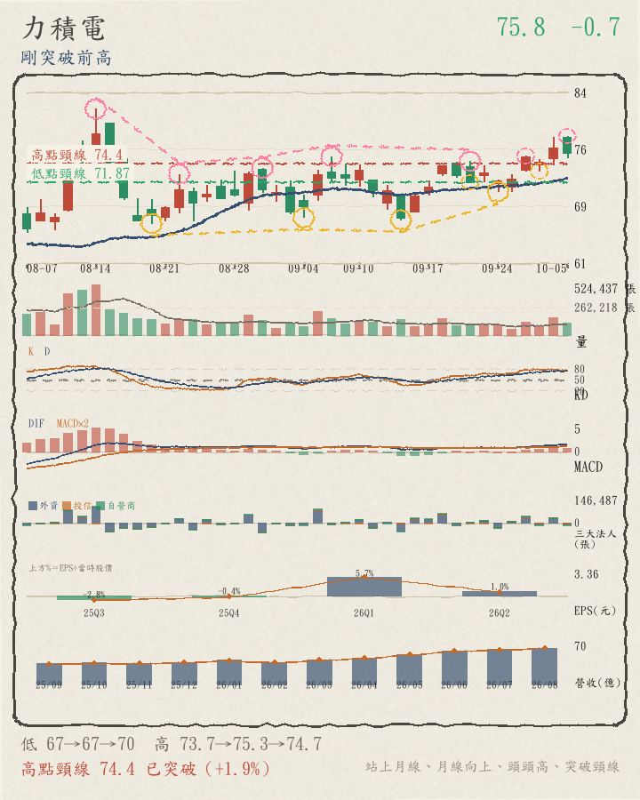
今天收黑、站上月線 72.355，已站上高點頸線 74.4，高點還在墊高（但底部沒同步墊高）。
- 月線位置：收盤 75.8 在月線 72.355 之上；5 日線 74.88 也在月線之上（短均在上）；月線向上、5 日線向上
- 量能：成交量是 20 日均量的 1.00 倍，跟 20 日均量差不多
- 關鍵價位：高點頸線 74.4 已站上；最近轉折高點 74.7（高於 1.5%）；最近轉折低點 70.5（高於 7.5%）
- 轉折結構：高點 73.7、75.3、74.7 墊高 4.6%（頭頭高），但低點 67、66.7、70.5 沒有同步墊高；還沒確認的轉折低點 09-22 71.8、10-01 73.3；還沒確認的轉折高點 09-30 75.4、10-05 78.1（圖上虛線小圈）
剛突破前高 成交金額 91.82 億・全榜第 35 名（上市第 29 名）
好條件 4/8：站上月線、月線向上、頭頭高、外資買超
不好條件 1/8：相對大盤弱
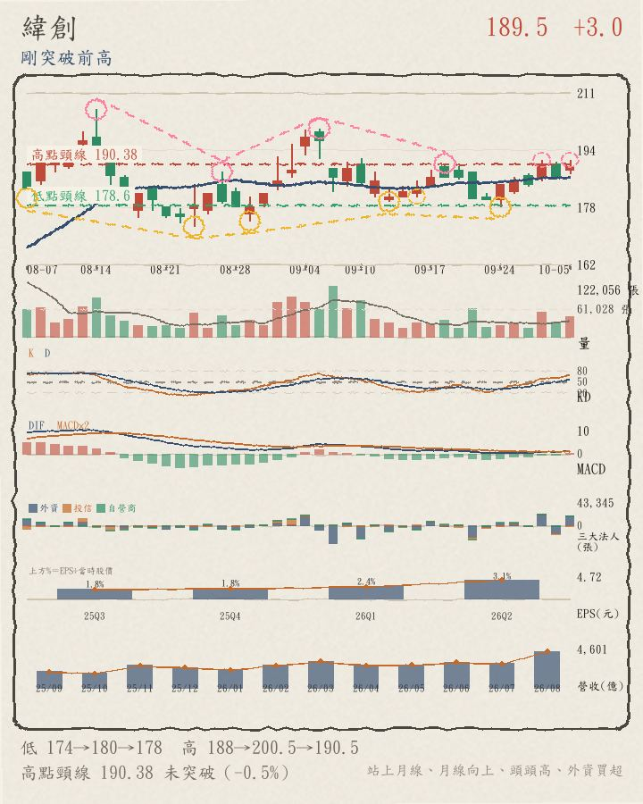
今天收紅、站上月線 186.425，離高點頸線 190.38 還差 0.5%，高點還在墊高（但底部沒同步墊高）。
- 月線位置：收盤 189.5 在月線 186.425 之上；5 日線 187.3 也在月線之上（短均在上）；月線向上、5 日線向上
- 量能：成交量是 20 日均量的 0.96 倍，跟 20 日均量差不多
- 關鍵價位：高點頸線 190.38 還沒突破，差 0.5%；最近轉折高點 190.5（低於 0.5%）；最近轉折低點 178（高於 6.5%）
- 轉折結構：高點 188、200.5、190.5 墊高 0.5%（頭頭高），但低點 174、179.5、178 沒有同步墊高；還沒確認的轉折低點 09-16 181；還沒確認的轉折高點 10-01 191.5、10-05 191.5（圖上虛線小圈）
剛突破前高 成交金額 88.83 億・全榜第 37 名（上市第 30 名）
好條件 5/8：站上月線、頭頭高、相對大盤強、外資買超、量價攻擊（收紅＋大量）
不好條件 1/8：月線下彎
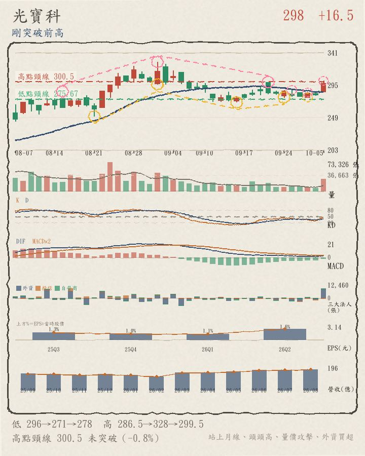
今天帶量收紅、站上月線 285.75，離高點頸線 300.5 還差 0.8%，高點還在墊高（但底部沒同步墊高）。
- 月線位置：收盤 298 在月線 285.75 之上；5 日線 284.9 也在月線之下（短均在下）；月線走平或向下、5 日線走平或向下
- 量能：成交量是 20 日均量的 1.79 倍，比 20 日均量大不少；收紅又量增，量價配合
- 關鍵價位：高點頸線 300.5 還沒突破，差 0.8%；最近轉折高點 299.5（低於 0.5%）；最近轉折低點 278（高於 7.2%）
- 轉折結構：高點 286.5、328、299.5 墊高 0.7%（頭頭高），但低點 296.5、271、278 沒有同步墊高；還沒確認的轉折低點 10-01 278；還沒確認的轉折高點 10-01 285、10-05 301.5（圖上虛線小圈）
剛突破前高 成交金額 86.88 億・全榜第 38 名（上市第 31 名）
好條件 4/8：站上月線、頭頭高、相對大盤強、外資買超
不好條件 1/8：月線下彎
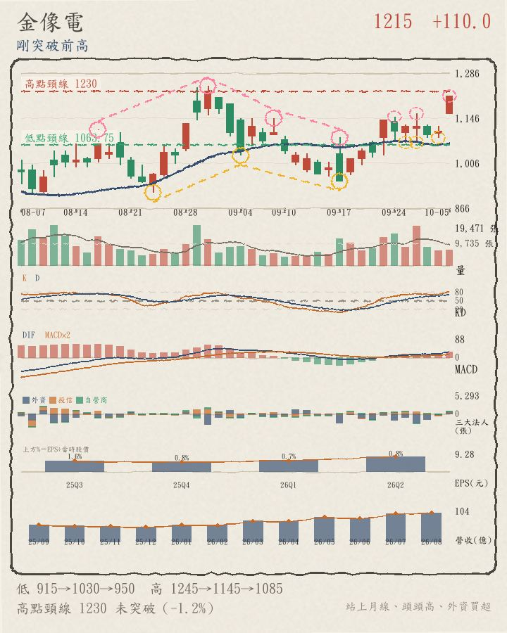
今天收紅、但成交量比平均少、站上月線 1067.7，離高點頸線 1230 還差 1.2%，高點還在墊高（但底部沒同步墊高）。
- 月線位置：收盤 1215 在月線 1067.7 之上；5 日線 1131 也在月線之上（短均在上）；月線走平或向下、5 日線向上
- 量能：成交量是 20 日均量的 0.85 倍，比 20 日均量少一些；收紅但量縮，量價背離
- 關鍵價位：高點頸線 1230 還沒突破，差 1.2%；最近轉折高點 1085（高於 12.0%）；最近轉折低點 950（高於 27.9%）
- 轉折結構：高點 1245、1145、1085 墊高 12.0%（頭頭高），但低點 915、1030、950 沒有同步墊高；還沒確認的轉折低點 09-30 1070、10-02 1085；還沒確認的轉折高點 09-30 1160、10-05 1215（圖上虛線小圈）
剛突破前高 成交金額 81.27 億・全榜第 39 名（上市第 32 名）
好條件 4/8：站上月線、月線向上、頭頭高、相對大盤強
不好條件 1/8：外資賣超
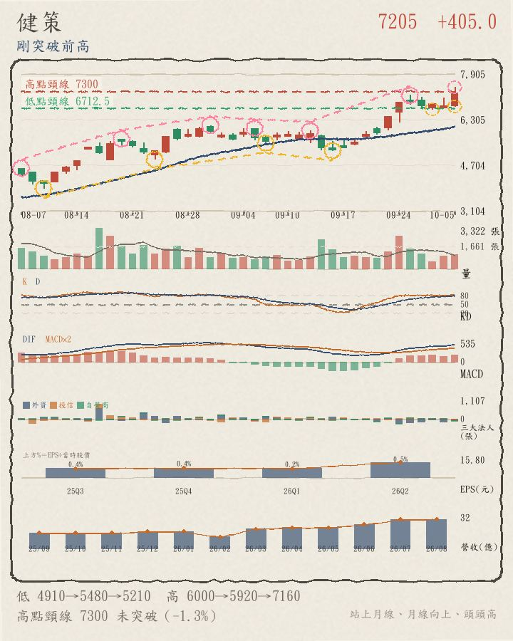
今天收紅、站上月線 6058.5，離高點頸線 7300 還差 1.3%，高點還在墊高（但底部沒同步墊高）。
- 月線位置：收盤 7205 在月線 6058.5 之上；5 日線 6915 也在月線之上（短均在上）；月線向上、5 日線向上
- 量能：成交量是 20 日均量的 1.00 倍，跟 20 日均量差不多
- 關鍵價位：高點頸線 7300 還沒突破，差 1.3%；最近轉折高點 7160（高於 0.6%）；最近轉折低點 5210（高於 38.3%）
- 轉折結構：高點 6000、5920、7160 墊高 3.9%（頭頭高），但低點 4910、5480、5210 沒有同步墊高；還沒確認的轉折低點 10-01 6665、10-05 6760；還沒確認的轉折高點 10-05 7440（圖上虛線小圈）
上升趨勢（底底高＋頭頭高） 成交金額 80.94 億・全榜第 40 名（上市第 33 名）
好條件 4/8：站上月線、月線向上、底底高、頭頭高
不好條件 4/8：今日下跌、相對大盤弱、外資賣超、收盤跌破前一日低點
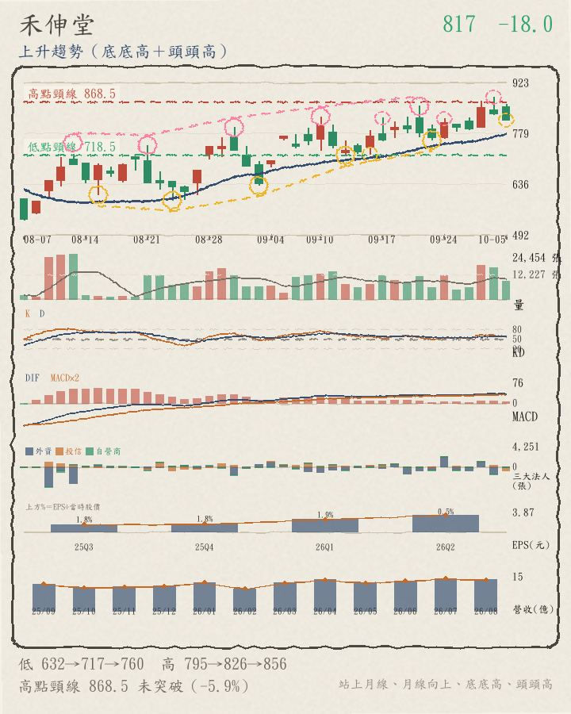
今天收黑、站上月線 777.5，離高點頸線 868.5 還差 5.9%，轉折結構仍是底底高＋頭頭高。
- 月線位置：收盤 817 在月線 777.5 之上；5 日線 818.2 也在月線之上（短均在上）；月線向上、5 日線向上
- 量能：成交量是 20 日均量的 0.96 倍，跟 20 日均量差不多
- 關鍵價位：高點頸線 868.5 還沒突破，差 5.9%；最近轉折高點 856（低於 4.6%）；最近轉折低點 760（高於 7.5%）
- 轉折結構：低點 632、717、760 一路墊高 20.3%、高點 795、826、856 也一路墊高 7.7%，是底底高＋頭頭高；還沒確認的轉折低點 09-16 720、10-05 817；還沒確認的轉折高點 09-24 820、10-02 881（圖上虛線小圈）
剛突破前高 成交金額 80.12 億・全榜第 41 名（上市第 34 名）
好條件 4/8：站上月線、月線向上、頭頭高、突破頸線
不好條件 4/8：今日下跌、相對大盤弱、量增下跌（出貨）、外資賣超
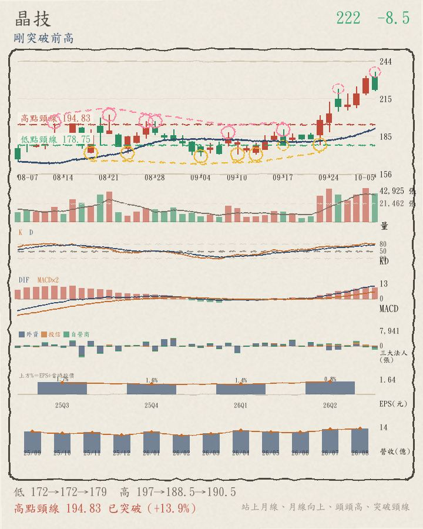
今天帶量收黑、站上月線 191.4，已站上高點頸線 194.83，高點還在墊高（但底部沒同步墊高）。
- 月線位置：收盤 222 在月線 191.4 之上；5 日線 217.9 也在月線之上（短均在上）；月線向上、5 日線向上
- 量能：成交量是 20 日均量的 2.04 倍，比 20 日均量大不少；收黑卻量增，量價背離
- 關鍵價位：高點頸線 194.83 已站上；最近轉折高點 190.5（高於 16.5%）；最近轉折低點 179（高於 24.0%）
- 轉折結構：高點 197、188.5、190.5 墊高 23.6%（頭頭高），但低點 171.5、171.5、179 沒有同步墊高；還沒確認的轉折低點 09-17 178.5；還沒確認的轉折高點 09-29 222.5、10-05 235.5（圖上虛線小圈）
剛突破前高 成交金額 74.79 億・全榜第 42 名（上市第 35 名）
好條件 4/8：站上月線、頭頭高、突破頸線、相對大盤強
不好條件 2/8：外資賣超、月線下彎
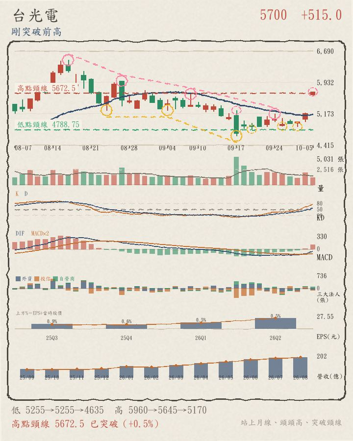
今天收紅、但成交量比平均少、站上月線 5151.75，已站上高點頸線 5672.5，高點還在墊高（但底部沒同步墊高）。
- 月線位置：收盤 5700 在月線 5151.75 之上；5 日線 5143 也在月線之下（短均在下）；月線走平或向下、5 日線向上
- 量能：成交量是 20 日均量的 0.71 倍，比 20 日均量少很多；收紅但量縮，量價背離
- 關鍵價位：高點頸線 5672.5 已站上；最近轉折高點 5170（高於 10.3%）；最近轉折低點 4635（高於 23.0%）
- 轉折結構：高點 5960、5645、5170 墊高 10.3%（頭頭高），但低點 5255、5255、4635 沒有同步墊高；還沒確認的轉折低點 09-29 4870、10-01 4855；還沒確認的轉折高點 09-17 5255、10-05 5700（圖上虛線小圈）
剛突破前高 成交金額 73.52 億・全榜第 44 名（上市第 36 名）
好條件 4/8：站上月線、月線向上、頭頭高、突破頸線
不好條件 4/8：今日下跌、相對大盤弱、量增下跌（出貨）、外資賣超
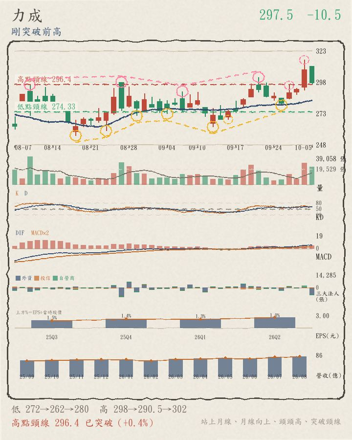
今天帶量收黑、站上月線 283.425，已站上高點頸線 296.4，高點還在墊高（但底部沒同步墊高）。
- 月線位置：收盤 297.5 在月線 283.425 之上；5 日線 293.7 也在月線之上（短均在上）；月線向上、5 日線向上
- 量能：成交量是 20 日均量的 1.94 倍，比 20 日均量大不少；收黑卻量增，量價背離
- 關鍵價位：高點頸線 296.4 已站上；最近轉折高點 302（低於 1.5%）；最近轉折低點 279.5（高於 6.4%）
- 轉折結構：高點 298、290.5、302 墊高 4.6%（頭頭高），但低點 272.5、262、279.5 沒有同步墊高；還沒確認的轉折低點 09-16 268；還沒確認的轉折高點 09-30 295.5、10-02 316（圖上虛線小圈）
剛突破前高 成交金額 73.21 億・全榜第 45 名（上市第 37 名）
好條件 6/8：站上月線、頭頭高、突破頸線、相對大盤強、外資買超、量價攻擊（收紅＋大量）
不好條件 1/8：月線下彎
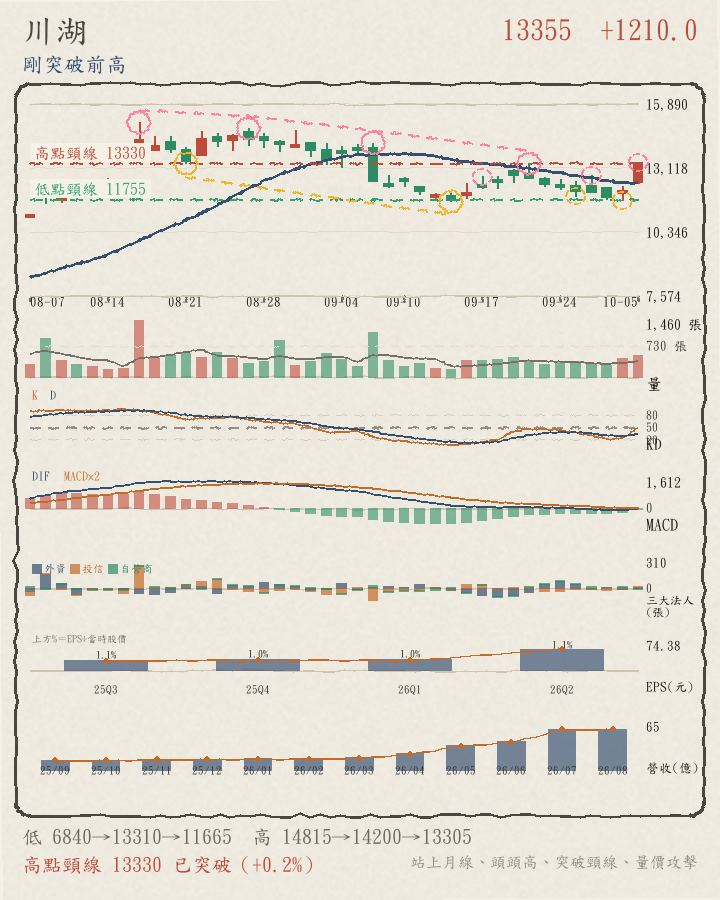
今天帶量收紅、站上月線 12481，已站上高點頸線 13330，高點還在墊高（但底部沒同步墊高）。
- 月線位置：收盤 13355 在月線 12481 之上；5 日線 12301 也在月線之下（短均在下）；月線走平或向下、5 日線走平或向下
- 量能：成交量是 20 日均量的 1.36 倍，比 20 日均量大不少；收紅又量增，量價配合
- 關鍵價位：高點頸線 13330 已站上；最近轉折高點 13305（高於 0.4%）；最近轉折低點 11665（高於 14.5%）
- 轉折結構：高點 14815、14200、13305 墊高 0.4%（頭頭高），但低點 6840、13310、11665 沒有同步墊高；還沒確認的轉折低點 09-29 11900、10-02 11700；還沒確認的轉折高點 09-30 12785、10-05 13355（圖上虛線小圈）
區間或轉弱 成交金額 68.89 億・全榜第 47 名（上市第 38 名）
好條件 4/8：站上月線、突破頸線、相對大盤強、量價攻擊（收紅＋大量）
不好條件 2/8：外資賣超、月線下彎
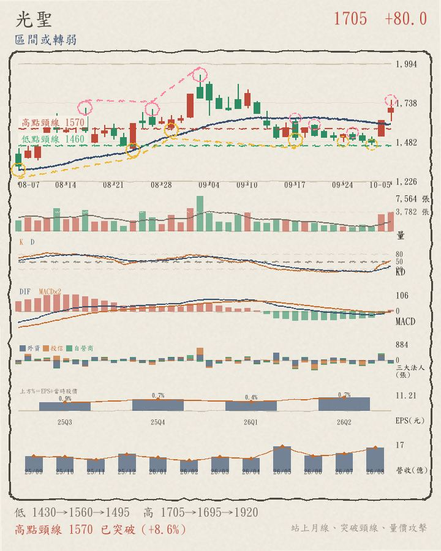
今天帶量收紅、站上月線 1598，已站上高點頸線 1570，轉折還沒走出明顯方向。
- 月線位置：收盤 1705 在月線 1598 之上；5 日線 1560 也在月線之下（短均在下）；月線走平或向下、5 日線向上
- 量能：成交量是 20 日均量的 1.77 倍，比 20 日均量大不少；收紅又量增，量價配合
- 關鍵價位：高點頸線 1570 已站上；最近轉折高點 1920（低於 11.2%）；最近轉折低點 1495（高於 14.0%）
- 轉折結構：低點 1430、1560、1495 與高點 1705、1695、1920 都沒有明顯遞增，屬於區間震盪或轉弱；還沒確認的轉折低點 09-24 1485、10-01 1465；還沒確認的轉折高點 09-29 1545、10-05 1755（圖上虛線小圈）
上升趨勢（底底高＋頭頭高） 成交金額 68.7 億・全榜第 48 名（上市第 39 名）
好條件 7/8：站上月線、月線向上、底底高、頭頭高、相對大盤強、外資買超、量價攻擊（收紅＋大量）
不好條件 0/8：無
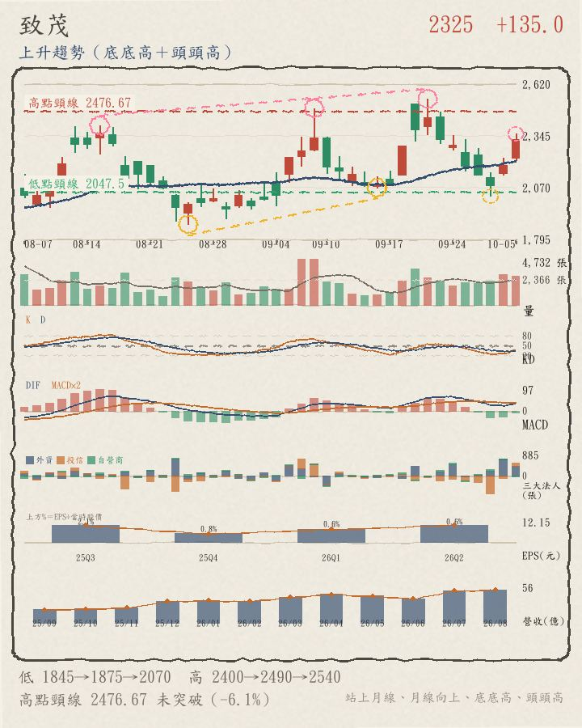
今天帶量收紅、站上月線 2211.75，離高點頸線 2476.67 還差 6.1%，轉折結構仍是底底高＋頭頭高。
- 月線位置：收盤 2325 在月線 2211.75 之上；5 日線 2183 也在月線之下（短均在下）；月線向上、5 日線走平或向下
- 量能：成交量是 20 日均量的 1.27 倍，比 20 日均量大不少；收紅又量增，量價配合
- 關鍵價位：高點頸線 2476.67 還沒突破，差 6.1%；最近轉折高點 2540（低於 8.5%）；最近轉折低點 2070（高於 12.3%）
- 轉折結構：低點 1845、1875、2070 一路墊高 12.2%、高點 2400、2490、2540 也一路墊高 5.8%，是底底高＋頭頭高；還沒確認的轉折低點 10-01 2025；還沒確認的轉折高點 10-05 2355（圖上虛線小圈）
剛突破前高 成交金額 68.32 億・全榜第 49 名（上市第 40 名）
好條件 6/8：站上月線、月線向上、頭頭高、突破頸線、外資買超、量價攻擊（收紅＋大量）
不好條件 1/8：相對大盤弱
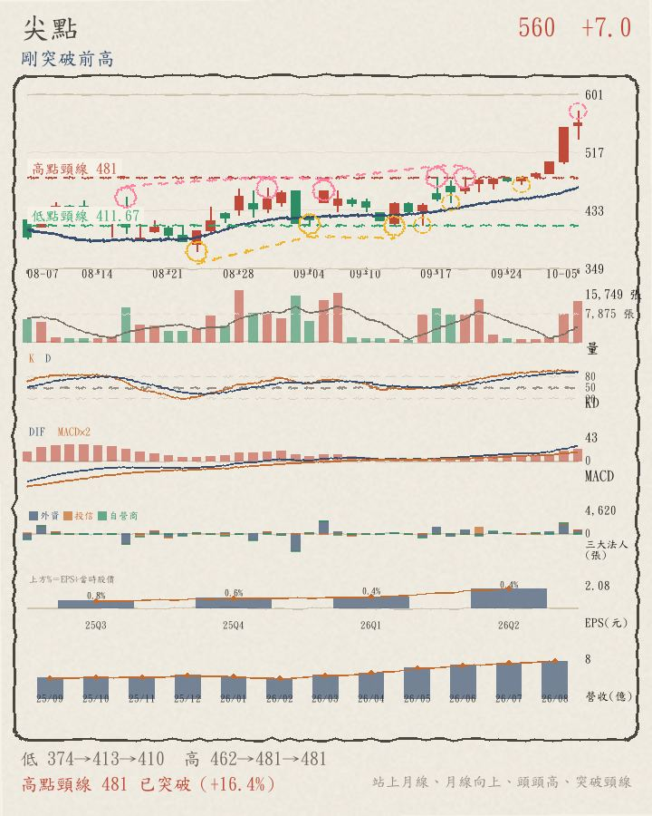
今天帶量收紅、站上月線 466.9，已站上高點頸線 481，高點還在墊高（但底部沒同步墊高）。
- 月線位置：收盤 560 在月線 466.9 之上；5 日線 516.4 也在月線之上（短均在上）；月線向上、5 日線向上
- 量能：成交量是 20 日均量的 2.14 倍，比 20 日均量大不少；收紅又量增，量價配合
- 關鍵價位：高點頸線 481 已站上；最近轉折高點 481（高於 16.4%）；最近轉折低點 410.5（高於 36.4%）
- 轉折結構：高點 462、481、481 墊高 20.0%（頭頭高），但低點 373.5、413、410.5 沒有同步墊高；還沒確認的轉折低點 09-18 444、09-29 470；還沒確認的轉折高點 10-05 577（圖上虛線小圈）
底部墊高、突破前高 成交金額 66.27 億・全榜第 51 名（上市第 41 名）
好條件 4/8：站上月線、底底高、頭頭高、量價攻擊（收紅＋大量）
不好條件 3/8：相對大盤弱、外資賣超、月線下彎
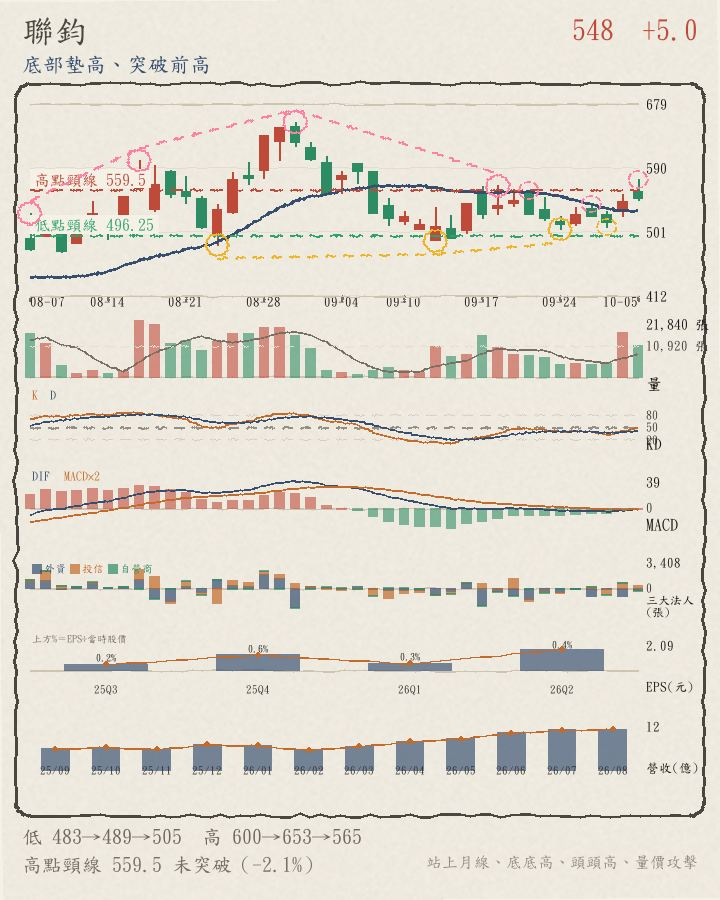
今天帶量收紅、站上月線 530.525，離高點頸線 559.5 還差 2.1%，轉折結構仍是底底高＋頭頭高。
- 月線位置：收盤 548 在月線 530.525 之上；5 日線 530.8 也在月線之上（短均在上）；月線走平或向下、5 日線向上
- 量能：成交量是 20 日均量的 1.80 倍，比 20 日均量大不少；收紅又量增，量價配合
- 關鍵價位：高點頸線 559.5 還沒突破，差 2.1%；最近轉折高點 565（低於 3.0%）；最近轉折低點 505（高於 8.5%）
- 轉折結構：低點 483、489、505 一路墊高 4.6%、高點 600、653、565 也一路墊高 1.6%，是底底高＋頭頭高；還沒確認的轉折低點 10-01 508；還沒確認的轉折高點 09-30 540、10-05 574（圖上虛線小圈）
高點墊高、底部不穩 成交金額 64.27 億・全榜第 53 名（上市第 42 名）
好條件 3/8：頭頭高、相對大盤強、外資買超
不好條件 2/8：在月線之下、月線下彎
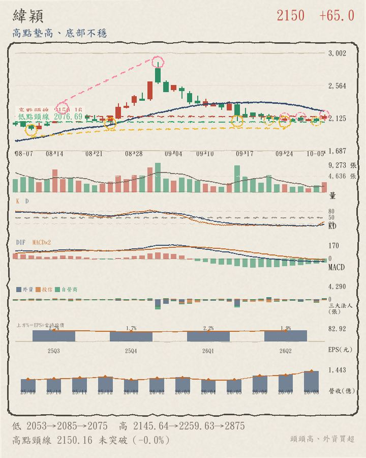
今天收紅、但成交量比平均少、跌破月線 2221，離高點頸線 2150.16 還差 0.0%，高點還在墊高（但底部沒同步墊高）。
- 月線位置：收盤 2150 在月線 2221 之下；5 日線 2107 也在月線之下（短均在下）；月線走平或向下、5 日線走平或向下
- 量能：成交量是 20 日均量的 0.94 倍，比 20 日均量少一些；收紅但量縮，量價背離
- 關鍵價位：高點頸線 2150.16 還沒突破，差 0.0%；最近轉折高點 2875（低於 25.2%）；最近轉折低點 2075（高於 3.6%）
- 轉折結構：高點 2145.64、2259.63、2875 墊高 34.0%（頭頭高），但低點 2053.44、2085、2075 沒有同步墊高；還沒確認的轉折低點 09-22 2090、10-02 2080；還沒確認的轉折高點 09-30 2145、10-05 2170（圖上虛線小圈）
上升趨勢（底底高＋頭頭高） 成交金額 63.82 億・全榜第 54 名（上市第 43 名）
好條件 6/8：站上月線、月線向上、底底高、頭頭高、相對大盤強、外資買超
不好條件 0/8：無
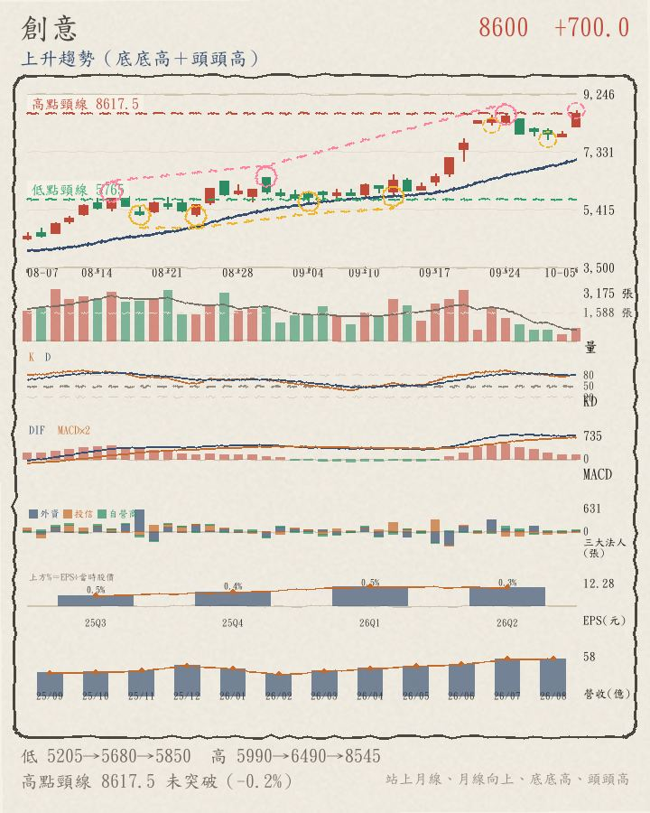
今天收紅、但成交量比平均少、站上月線 7074.75，離高點頸線 8617.5 還差 0.2%，轉折結構仍是底底高＋頭頭高。
- 月線位置：收盤 8600 在月線 7074.75 之上；5 日線 8073 也在月線之上（短均在上）；月線向上、5 日線向上
- 量能：成交量是 20 日均量的 0.48 倍，比 20 日均量少很多；收紅但量縮，量價背離
- 關鍵價位：高點頸線 8617.5 還沒突破，差 0.2%；最近轉折高點 8545（高於 0.6%）；最近轉折低點 5850（高於 47.0%）
- 轉折結構：低點 5205、5680、5850 一路墊高 12.4%、高點 5990、6490、8545 也一路墊高 42.7%，是底底高＋頭頭高；還沒確認的轉折低點 09-23 8200、10-01 7730；還沒確認的轉折高點 10-05 8690（圖上虛線小圈）
區間或轉弱 成交金額 62.12 億・全榜第 55 名（上市第 44 名）
好條件 5/8：站上月線、月線向上、相對大盤強、外資買超、量價攻擊（收紅＋大量）
不好條件 0/8：無
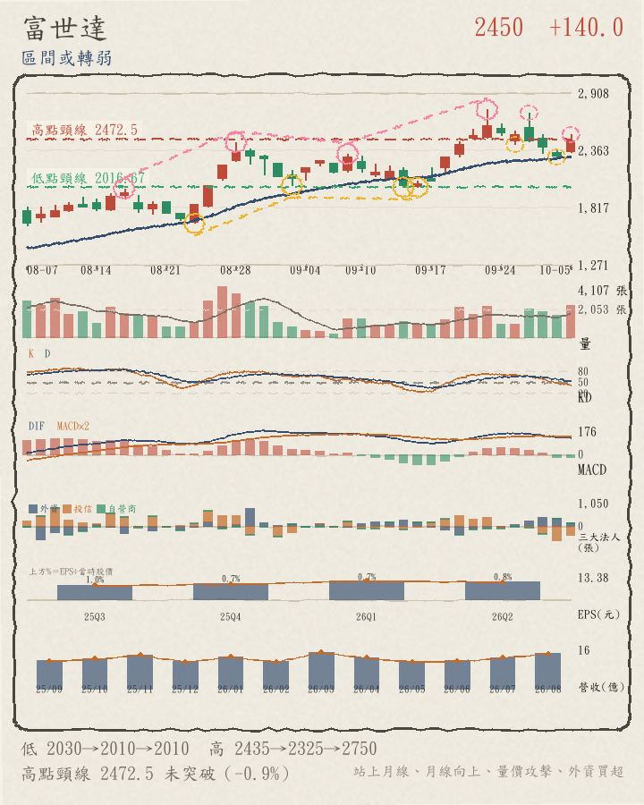
今天帶量收紅、站上月線 2302，離高點頸線 2472.5 還差 0.9%，轉折還沒走出明顯方向。
- 月線位置：收盤 2450 在月線 2302 之上；5 日線 2424 也在月線之上（短均在上）；月線向上、5 日線走平或向下
- 量能：成交量是 20 日均量的 1.92 倍，比 20 日均量大不少；收紅又量增，量價配合
- 關鍵價位：高點頸線 2472.5 還沒突破，差 0.9%；最近轉折高點 2750（低於 10.9%）；最近轉折低點 2010（高於 21.9%）
- 轉折結構：低點 2030、2010、2010 與高點 2435、2325、2750 都沒有明顯遞增，屬於區間震盪或轉弱；還沒確認的轉折低點 09-29 2420、10-02 2300；還沒確認的轉折高點 09-30 2720、10-05 2510（圖上虛線小圈）
騰輝電子-KY 6672 上市
451 +12.0
底部墊高、突破前高 成交金額 59.89 億・全榜第 56 名（上市第 45 名）
好條件 7/8：站上月線、月線向上、底底高、頭頭高、突破頸線、相對大盤強、量價攻擊（收紅＋大量）
不好條件 1/8：外資賣超
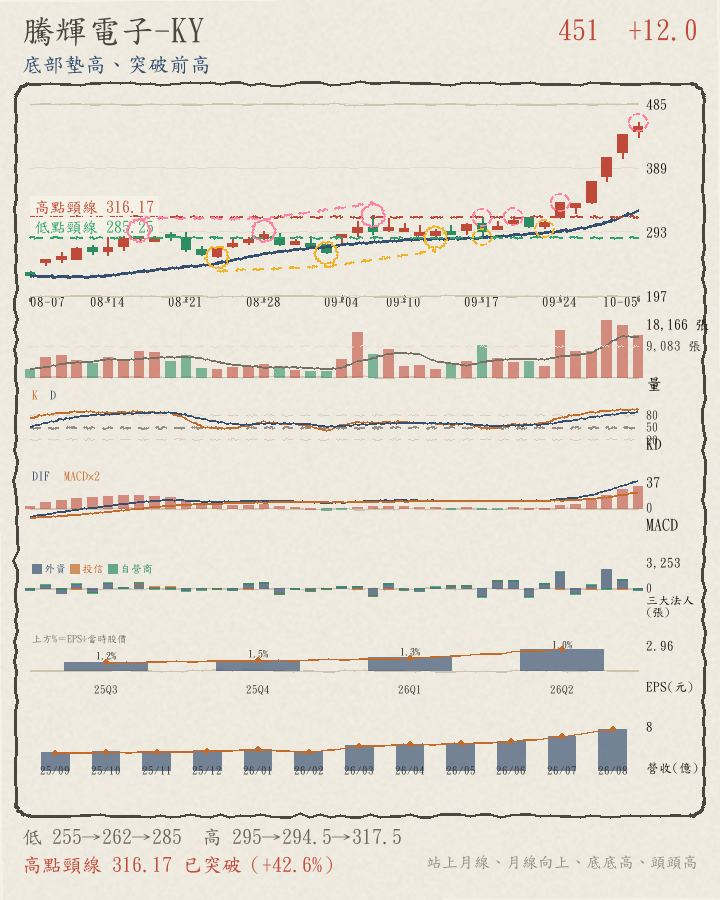
今天帶量收紅、站上月線 325.725，已站上高點頸線 316.17，轉折結構仍是底底高＋頭頭高。
- 月線位置：收盤 451 在月線 325.725 之上；5 日線 400 也在月線之上（短均在上）；月線向上、5 日線向上
- 量能：成交量是 20 日均量的 1.77 倍，比 20 日均量大不少；收紅又量增，量價配合
- 關鍵價位：高點頸線 316.17 已站上；最近轉折高點 317.5（高於 42.0%）；最近轉折低點 285（高於 58.2%）
- 轉折結構：低點 255、261.5、285 一路墊高 11.8%、高點 295、294.5、317.5 也一路墊高 44.1%，是底底高＋頭頭高；還沒確認的轉折低點 09-17 285.5、09-23 298；還沒確認的轉折高點 09-24 337.5、10-05 457.5（圖上虛線小圈）
高點墊高、底部不穩 成交金額 55.6 億・全榜第 57 名（上市第 46 名）
好條件 4/8：站上月線、月線向上、頭頭高、突破頸線
不好條件 3/8：今日下跌、相對大盤弱、外資賣超
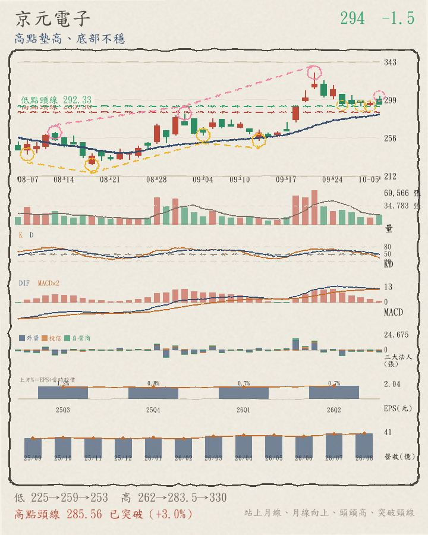
今天收黑、成交量也比平均少、站上月線 282.625，已站上高點頸線 285.56，高點還在墊高（但底部沒同步墊高）。
- 月線位置：收盤 294 在月線 282.625 之上；5 日線 294.9 也在月線之上（短均在上）；月線向上、5 日線走平或向下
- 量能：成交量是 20 日均量的 0.77 倍，比 20 日均量少很多
- 關鍵價位：高點頸線 285.56 已站上；最近轉折高點 330（低於 10.9%）；最近轉折低點 253（高於 16.2%）
- 轉折結構：高點 262、283.5、330 墊高 26.0%（頭頭高），但低點 225、259、253 沒有同步墊高；還沒確認的轉折低點 10-01 292、10-02 292；還沒確認的轉折高點 10-05 303.5（圖上虛線小圈）
剛突破前高 成交金額 54.9 億・全榜第 58 名（上市第 47 名）
好條件 4/8：站上月線、頭頭高、相對大盤強、量價攻擊（收紅＋大量）
不好條件 2/8：外資賣超、月線下彎
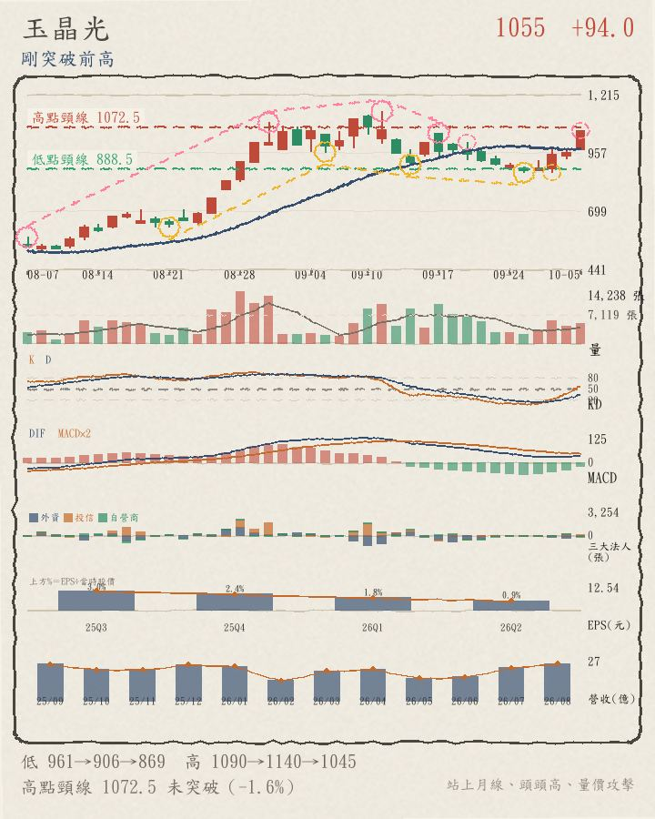
今天收紅、站上月線 976.1，離高點頸線 1072.5 還差 1.6%，高點還在墊高（但底部沒同步墊高）。
- 月線位置：收盤 1055 在月線 976.1 之上；5 日線 947.6 也在月線之下（短均在下）；月線走平或向下、5 日線向上
- 量能：成交量是 20 日均量的 1.01 倍，跟 20 日均量差不多
- 關鍵價位：高點頸線 1072.5 還沒突破，差 1.6%；最近轉折高點 1045（高於 1.0%）；最近轉折低點 869（高於 21.4%）
- 轉折結構：高點 1090、1140、1045 墊高 1.0%（頭頭高），但低點 961、906、869 沒有同步墊高；還沒確認的轉折低點 10-01 871；還沒確認的轉折高點 09-21 1005、10-05 1055（圖上虛線小圈）
剛突破前高 成交金額 53.2 億・全榜第 59 名（上市第 48 名）
好條件 4/8：站上月線、月線向上、頭頭高、量價攻擊（收紅＋大量）
不好條件 2/8：相對大盤弱、外資賣超
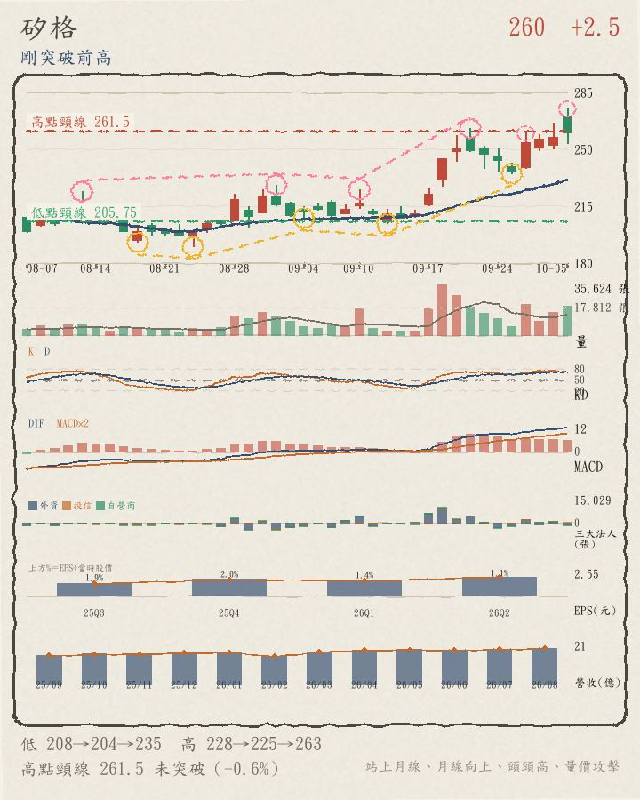
今天帶量收紅、站上月線 231.2，離高點頸線 261.5 還差 0.6%，高點還在墊高（但底部沒同步墊高）。
- 月線位置：收盤 260 在月線 231.2 之上；5 日線 252.9 也在月線之上（短均在上）；月線向上、5 日線向上
- 量能：成交量是 20 日均量的 1.65 倍，比 20 日均量大不少；收紅又量增，量價配合
- 關鍵價位：高點頸線 261.5 還沒突破，差 0.6%；最近轉折高點 263（低於 1.1%）；最近轉折低點 235（高於 10.6%）
- 轉折結構：高點 228、225、263 墊高 4.6%（頭頭高），但低點 207.5、204、235 沒有同步墊高；還沒確認的轉折高點 09-30 260、10-05 275（圖上虛線小圈）
剛突破前高 成交金額 51.1 億・全榜第 61 名（上市第 49 名）
好條件 5/8：站上月線、月線向上、頭頭高、相對大盤強、量價攻擊（收紅＋大量）
不好條件 1/8：外資賣超
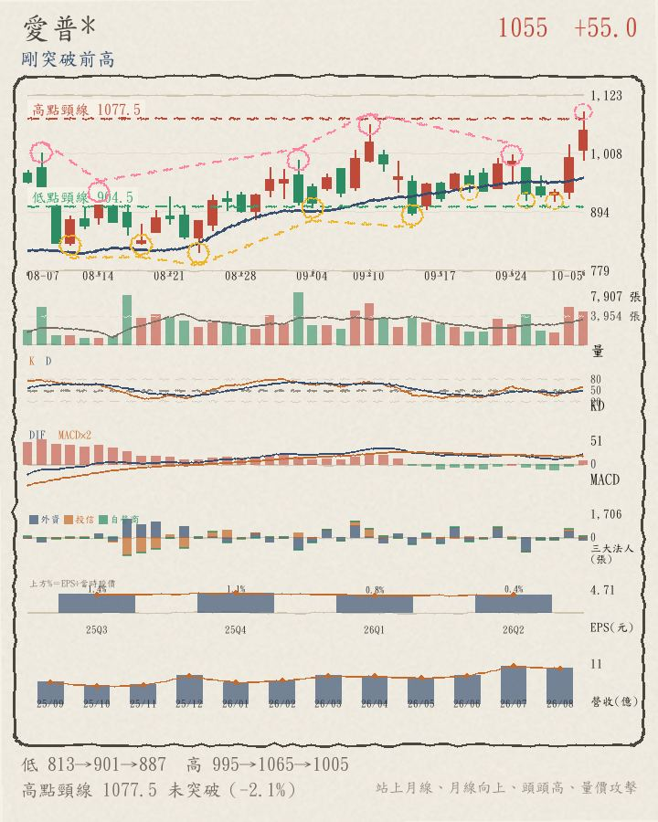
今天帶量收紅、站上月線 960.7，離高點頸線 1077.5 還差 2.1%，高點還在墊高（但底部沒同步墊高）。
- 月線位置：收盤 1055 在月線 960.7 之上；5 日線 968.8 也在月線之上（短均在上）；月線向上、5 日線向上
- 量能：成交量是 20 日均量的 1.40 倍，比 20 日均量大不少；收紅又量增，量價配合
- 關鍵價位：高點頸線 1077.5 還沒突破，差 2.1%；最近轉折高點 1005（高於 5.0%）；最近轉折低點 887（高於 18.9%）
- 轉折結構：高點 995、1065、1005 墊高 8.5%（頭頭高），但低點 813、901、887 沒有同步墊高；還沒確認的轉折低點 09-29 916、10-01 914；還沒確認的轉折高點 10-05 1090（圖上虛線小圈）
剛突破前高 成交金額 49.95 億・全榜第 62 名（上市第 50 名）
好條件 4/8：站上月線、月線向上、頭頭高、突破頸線
不好條件 4/8：今日下跌、相對大盤弱、量增下跌（出貨）、外資賣超
今天帶量收黑、站上月線 128.175，已站上高點頸線 125.75，高點還在墊高（但底部沒同步墊高）。
- 月線位置：收盤 155.5 在月線 128.175 之上；5 日線 148.9 也在月線之上（短均在上）；月線向上、5 日線向上
- 量能：成交量是 20 日均量的 2.60 倍，比 20 日均量大不少；收黑卻量增，量價背離
- 關鍵價位：高點頸線 125.75 已站上；最近轉折高點 144（高於 8.0%）；最近轉折低點 109（高於 42.7%）
- 轉折結構：高點 126.5、125、144 墊高 16.0%（頭頭高），但低點 111、115、109 沒有同步墊高；還沒確認的轉折低點 09-24 130；還沒確認的轉折高點 10-02 167（圖上虛線小圈）
剛突破前高 成交金額 290.88 億・全榜第 11 名（上櫃第 1 名）
好條件 7/8：站上月線、月線向上、頭頭高、突破頸線、相對大盤強、外資買超、量價攻擊（收紅＋大量）
不好條件 0/8：無
今天帶量收紅、站上月線 490.775，已站上高點頸線 512.5，高點還在墊高（但底部沒同步墊高）。
- 月線位置：收盤 615 在月線 490.775 之上；5 日線 555.8 也在月線之上（短均在上）；月線向上、5 日線向上
- 量能：成交量是 20 日均量的 1.75 倍，比 20 日均量大不少；收紅又量增，量價配合
- 關鍵價位：高點頸線 512.5 已站上；最近轉折高點 478（高於 28.7%）；最近轉折低點 482（高於 27.6%）
- 轉折結構：高點 492、492、478 墊高 31.8%（頭頭高），但低點 438.5、420、482 沒有同步墊高；還沒確認的轉折低點 09-18 467；還沒確認的轉折高點 09-23 518、10-05 630（圖上虛線小圈）
底部墊高、突破前高 成交金額 227.47 億・全榜第 13 名（上櫃第 2 名）
好條件 8/8：站上月線、月線向上、底底高、頭頭高、突破頸線、相對大盤強、外資買超、量價攻擊（收紅＋大量）
不好條件 0/8：無
今天帶量收紅、站上月線 506.65，已站上高點頸線 567，轉折結構仍是底底高＋頭頭高。
- 月線位置：收盤 570 在月線 506.65 之上；5 日線 517.4 也在月線之上（短均在上）；月線向上、5 日線向上
- 量能：成交量是 20 日均量的 3.84 倍，比 20 日均量大不少；收紅又量增，量價配合
- 關鍵價位：高點頸線 567 已站上；最近轉折高點 535（高於 6.5%）；最近轉折低點 477（高於 19.5%）
- 轉折結構：低點 399、469.5、477 一路墊高 19.5%、高點 462、564、535 也一路墊高 6.5%，是底底高＋頭頭高；還沒確認的轉折低點 09-23 490、09-30 495；還沒確認的轉折高點 09-29 519、10-05 570（圖上虛線小圈）
剛突破前高 成交金額 220.17 億・全榜第 16 名（上櫃第 3 名）
好條件 5/8：站上月線、月線向上、頭頭高、突破頸線、外資買超
不好條件 3/8：今日下跌、相對大盤弱、量增下跌（出貨）
今天帶量收黑、站上月線 976.15，已站上高點頸線 1018.75，高點還在墊高（但底部沒同步墊高）。
- 月線位置：收盤 1180 在月線 976.15 之上；5 日線 1087 也在月線之上（短均在上）；月線向上、5 日線向上
- 量能：成交量是 20 日均量的 1.73 倍，比 20 日均量大不少；收黑卻量增，量價背離
- 關鍵價位：高點頸線 1018.75 已站上；最近轉折高點 1010（高於 16.8%）；最近轉折低點 872（高於 35.3%）
- 轉折結構：高點 1015、1015、1010 墊高 22.3%（頭頭高），但低點 931、875、872 沒有同步墊高；還沒確認的轉折低點 09-23 922、09-29 930；還沒確認的轉折高點 09-17 977、10-05 1235（圖上虛線小圈）
剛突破前高 成交金額 203.1 億・全榜第 17 名（上櫃第 4 名）
好條件 5/8：站上月線、頭頭高、突破頸線、相對大盤強、量價攻擊（收紅＋大量）
不好條件 2/8：外資賣超、月線下彎
今天帶量收紅、站上月線 2821.5，已站上高點頸線 2936.67，高點還在墊高（但底部沒同步墊高）。
- 月線位置：收盤 3000 在月線 2821.5 之上；5 日線 2786 也在月線之下（短均在下）；月線走平或向下、5 日線走平或向下
- 量能：成交量是 20 日均量的 2.22 倍，比 20 日均量大不少；收紅又量增，量價配合
- 關鍵價位：高點頸線 2936.67 已站上；最近轉折高點 2950（高於 1.7%）；最近轉折低點 2585（高於 16.1%）
- 轉折結構：高點 3600、2930、2950 墊高 5.3%（頭頭高），但低點 1450、2650、2585 沒有同步墊高；還沒確認的轉折低點 10-01 2605；還沒確認的轉折高點 09-29 2735、10-05 3105（圖上虛線小圈）
剛突破前高 成交金額 197.15 億・全榜第 18 名（上櫃第 5 名）
好條件 6/8：站上月線、月線向上、頭頭高、突破頸線、相對大盤強、量價攻擊（收紅＋大量）
不好條件 1/8：外資賣超
今天帶量收紅、站上月線 1442，已站上高點頸線 1490，高點還在墊高（但底部沒同步墊高）。
- 月線位置：收盤 1780 在月線 1442 之上；5 日線 1588 也在月線之上（短均在上）；月線向上、5 日線向上
- 量能：成交量是 20 日均量的 1.56 倍，比 20 日均量大不少；收紅又量增，量價配合
- 關鍵價位：高點頸線 1490 已站上；最近轉折高點 1460（高於 21.9%）；最近轉折低點 1275（高於 39.6%）
- 轉折結構：高點 1565、1430、1460 墊高 21.9%（頭頭高），但低點 1395、1295、1275 沒有同步墊高；還沒確認的轉折低點 09-29 1465；還沒確認的轉折高點 09-30 1550、10-05 1780（圖上虛線小圈）
高點墊高、底部不穩 成交金額 122.4 億・全榜第 32 名（上櫃第 6 名）
好條件 3/8：站上月線、月線向上、頭頭高
不好條件 4/8：今日下跌、相對大盤弱、量增下跌（出貨）、外資賣超
今天帶量收黑、站上月線 116.15，離高點頸線 140 還差 6.1%，高點還在墊高（但底部沒同步墊高）。
- 月線位置：收盤 131.5 在月線 116.15 之上；5 日線 130.1 也在月線之上（短均在上）；月線向上、5 日線向上
- 量能：成交量是 20 日均量的 1.35 倍，比 20 日均量大不少；收黑卻量增，量價背離
- 關鍵價位：高點頸線 140 還沒突破，差 6.1%；最近轉折高點 125（高於 5.2%）；最近轉折低點 100（高於 31.5%）
- 轉折結構：高點 117.5、119、125 墊高 6.4%（頭頭高），但低點 103.5、104、100 沒有同步墊高；還沒確認的轉折低點 09-23 114.5、09-24 114.5；還沒確認的轉折高點 10-02 140、10-05 140（圖上虛線小圈）
底部墊高、未過前高 成交金額 91.62 億・全榜第 36 名（上櫃第 7 名）
好條件 5/8：站上月線、底底高、相對大盤強、外資買超、量價攻擊（收紅＋大量）
不好條件 1/8：月線下彎
今天帶量收紅、站上月線 120.287，離高點頸線 129 還差 0.4%，底部還在墊高（但高點沒同步創高）。
- 月線位置：收盤 128.5 在月線 120.287 之上；5 日線 119.5 也在月線之下（短均在下）；月線走平或向下、5 日線走平或向下
- 量能：成交量是 20 日均量的 1.30 倍，比 20 日均量大不少；收紅又量增，量價配合
- 關鍵價位：高點頸線 129 還沒突破，差 0.4%；最近轉折高點 129.5（低於 0.8%）；最近轉折低點 113（高於 13.7%）
- 轉折結構：低點 108.571、111、113 墊高 4.1%（底底高），但高點 89.4284、135、129.5 沒有同步創高；還沒確認的轉折低點 10-01 113.5；還沒確認的轉折高點 09-16 121.5、10-05 128.5（圖上虛線小圈）
底部墊高、未過前高 成交金額 74.01 億・全榜第 43 名（上櫃第 8 名）
好條件 3/8：站上月線、月線向上、底底高
不好條件 4/8：今日下跌、相對大盤弱、外資賣超、收盤跌破前一日低點
今天收黑、成交量也比平均少、站上月線 205.9，離高點頸線 229.33 還差 5.8%，底部還在墊高（但高點沒同步創高）。
- 月線位置：收盤 216 在月線 205.9 之上；5 日線 216.5 也在月線之上（短均在上）；月線向上、5 日線走平或向下
- 量能：成交量是 20 日均量的 0.74 倍，比 20 日均量少很多
- 關鍵價位：高點頸線 229.33 還沒突破，差 5.8%；最近轉折高點 233（低於 7.3%）；最近轉折低點 208（高於 3.8%）
- 轉折結構：低點 152、171、208 墊高 36.8%（底底高），但高點 203、203、233 沒有同步創高；還沒確認的轉折低點 10-05 215.5；還沒確認的轉折高點 10-01 227、10-05 228（圖上虛線小圈）
剛突破前高 成交金額 70.64 億・全榜第 46 名（上櫃第 9 名）
好條件 4/8：站上月線、月線向上、頭頭高、突破頸線
不好條件 4/8：今日下跌、相對大盤弱、量增下跌（出貨）、外資賣超
今天帶量收黑、站上月線 189.35，已站上高點頸線 188.5，高點還在墊高（但底部沒同步墊高）。
- 月線位置：收盤 214.5 在月線 189.35 之上；5 日線 208.8 也在月線之上（短均在上）；月線向上、5 日線向上
- 量能：成交量是 20 日均量的 1.70 倍，比 20 日均量大不少；收黑卻量增，量價背離
- 關鍵價位：高點頸線 188.5 已站上；最近轉折高點 202（高於 6.2%）；最近轉折低點 181.5（高於 18.2%）
- 轉折結構：高點 187.5、187.5、202 墊高 13.6%（頭頭高），但低點 173、170、181.5 沒有同步墊高；還沒確認的轉折低點 09-18 180.5；還沒確認的轉折高點 09-17 191.5、10-02 229.5（圖上虛線小圈）
高點墊高、底部不穩 成交金額 67.57 億・全榜第 50 名（上櫃第 10 名）
好條件 5/8：站上月線、月線向上、頭頭高、相對大盤強、量價攻擊（收紅＋大量）
不好條件 1/8：外資賣超
今天帶量收紅、站上月線 1470.25，離高點頸線 1602.5 還差 3.3%，高點還在墊高（但底部沒同步墊高）。
- 月線位置：收盤 1550 在月線 1470.25 之上；5 日線 1548 也在月線之上（短均在上）；月線向上、5 日線走平或向下
- 量能：成交量是 20 日均量的 1.31 倍，比 20 日均量大不少；收紅又量增，量價配合
- 關鍵價位：高點頸線 1602.5 還沒突破，差 3.3%；最近轉折高點 1750（低於 11.4%）；最近轉折低點 1240（高於 25.0%）
- 轉折結構：高點 1080、1505、1750 墊高 62.0%（頭頭高），但低點 955、1300、1240 沒有同步墊高；還沒確認的轉折低點 10-01 1480、10-05 1490；還沒確認的轉折高點 09-22 1630、10-05 1575（圖上虛線小圈）
剛突破前高 成交金額 65.9 億・全榜第 52 名（上櫃第 11 名）
好條件 7/8：站上月線、月線向上、頭頭高、突破頸線、相對大盤強、外資買超、量價攻擊（收紅＋大量）
不好條件 0/8：無
今天帶量收紅、站上月線 1281.5，已站上高點頸線 1450，高點還在墊高（但底部沒同步墊高）。
- 月線位置：收盤 1490 在月線 1281.5 之上；5 日線 1348 也在月線之上（短均在上）；月線向上、5 日線向上
- 量能：成交量是 20 日均量的 2.42 倍，比 20 日均量大不少；收紅又量增，量價配合
- 關鍵價位：高點頸線 1450 已站上；最近轉折高點 1270（高於 17.3%）；最近轉折低點 1180（高於 26.3%）
- 轉折結構：高點 1455、1435、1270 墊高 17.3%（頭頭高），但低點 1185、1180、1180 沒有同步墊高；還沒確認的轉折低點 09-21 1200、10-01 1260；還沒確認的轉折高點 09-30 1420、10-05 1490（圖上虛線小圈）
剛突破前高 成交金額 52.51 億・全榜第 60 名（上櫃第 12 名）
好條件 2/8：站上月線、頭頭高
不好條件 5/8：今日下跌、相對大盤弱、量增下跌（出貨）、外資賣超、月線下彎
今天帶量收黑、站上月線 475.175，離高點頸線 553.5 還差 5.3%，高點還在墊高（但底部沒同步墊高）。
- 月線位置：收盤 524 在月線 475.175 之上；5 日線 501.2 也在月線之上（短均在上）；月線走平或向下、5 日線向上
- 量能：成交量是 20 日均量的 2.44 倍，比 20 日均量大不少；收黑卻量增，量價背離
- 關鍵價位：高點頸線 553.5 還沒突破，差 5.3%；最近轉折高點 508（高於 3.1%）；最近轉折低點 436（高於 20.2%）
- 轉折結構：高點 560、520、508 墊高 7.7%（頭頭高），但低點 418.5、417、436 沒有同步墊高；還沒確認的轉折高點 09-30 498、10-05 547（圖上虛線小圈）
剛突破前高 成交金額 49.28 億・全榜第 63 名（上櫃第 13 名）
好條件 6/8：站上月線、月線向上、頭頭高、突破頸線、外資買超、量價攻擊（收紅＋大量）
不好條件 1/8：相對大盤弱
今天帶量收紅、站上月線 67.185，已站上高點頸線 65.43，高點還在墊高（但底部沒同步墊高）。
- 月線位置：收盤 85.3 在月線 67.185 之上；5 日線 79.32 也在月線之上（短均在上）；月線向上、5 日線向上
- 量能：成交量是 20 日均量的 4.16 倍，比 20 日均量大不少；收紅又量增，量價配合
- 關鍵價位：高點頸線 65.43 已站上；最近轉折高點 65.7（高於 29.8%）；最近轉折低點 57.7（高於 47.8%）
- 轉折結構：高點 68.9、64.9、65.7 墊高 39.6%（頭頭高），但低點 60.9、59.7、57.7 沒有同步墊高；還沒確認的轉折低點 09-24 68.9、09-30 71.7；還沒確認的轉折高點 09-23 76.4、10-05 91.7（圖上虛線小圈）
區間或轉弱 成交金額 48.47 億・全榜第 64 名（上櫃第 14 名）
好條件 3/8：站上月線、月線向上、外資買超
不好條件 1/8：相對大盤弱
今天收紅、但成交量比平均少、站上月線 2076.5，離高點頸線 2196.25 還差 4.4%，轉折還沒走出明顯方向。
- 月線位置：收盤 2100 在月線 2076.5 之上；5 日線 2114 也在月線之上（短均在上）；月線向上、5 日線走平或向下
- 量能：成交量是 20 日均量的 0.79 倍，比 20 日均量少很多；收紅但量縮，量價背離
- 關鍵價位：高點頸線 2196.25 還沒突破，差 4.4%；最近轉折高點 2350（低於 10.6%）；最近轉折低點 2080（高於 1.0%）
- 轉折結構：低點 1970、1900、2080 與高點 2195、2160、2350 都沒有明顯遞增，屬於區間震盪或轉弱；還沒確認的轉折低點 10-05 2055；還沒確認的轉折高點 09-30 2215（圖上虛線小圈）
高點墊高、底部不穩 成交金額 45.91 億・全榜第 65 名（上櫃第 15 名）
好條件 2/8：月線向上、頭頭高
不好條件 5/8：今日下跌、相對大盤弱、在月線之下、量增下跌（出貨）、外資賣超
今天帶量收黑、跌破月線 242.125，離高點頸線 243.38 還差 0.8%，高點還在墊高（但底部沒同步墊高）。
- 月線位置：收盤 241.5 在月線 242.125 之下；5 日線 243.4 也在月線之上（短均在上）；月線向上、5 日線走平或向下
- 量能：成交量是 20 日均量的 1.47 倍，比 20 日均量大不少；收黑卻量增，量價背離
- 關鍵價位：高點頸線 243.38 還沒突破，差 0.8%；最近轉折高點 289.5（低於 16.6%）；最近轉折低點 238（高於 1.5%）
- 轉折結構：高點 239.5、251.5、289.5 墊高 20.9%（頭頭高），但低點 220、238、238 沒有同步墊高；還沒確認的轉折低點 10-05 239.5；還沒確認的轉折高點 09-30 247、10-05 249（圖上虛線小圈）
區間或轉弱 成交金額 41.76 億・全榜第 66 名（上櫃第 16 名）
好條件 4/8：站上月線、月線向上、相對大盤強、外資買超
不好條件 0/8：無
今天收紅、站上月線 5463.75，離高點頸線 5576.67 還差 1.0%，轉折還沒走出明顯方向。
- 月線位置：收盤 5520 在月線 5463.75 之上；5 日線 5234 也在月線之下（短均在下）；月線向上、5 日線走平或向下
- 量能：成交量是 20 日均量的 0.96 倍，跟 20 日均量差不多
- 關鍵價位：高點頸線 5576.67 還沒突破，差 1.0%；最近轉折高點 5860（低於 5.8%）；最近轉折低點 5090（高於 8.4%）
- 轉折結構：低點 4730、5365、5090 與高點 5585、6060、5860 都沒有明顯遞增，屬於區間震盪或轉弱；還沒確認的轉折低點 09-17 5485、10-01 4995；還沒確認的轉折高點 09-24 5625、10-05 5520（圖上虛線小圈）
剛突破前高 成交金額 36.02 億・全榜第 67 名（上櫃第 17 名）
好條件 7/8：站上月線、月線向上、頭頭高、突破頸線、相對大盤強、外資買超、量價攻擊（收紅＋大量）
不好條件 0/8：無
今天帶量收紅、站上月線 93.68，已站上高點頸線 97.07，高點還在墊高（但底部沒同步墊高）。
- 月線位置：收盤 105.5 在月線 93.68 之上；5 日線 99.36 也在月線之上（短均在上）；月線向上、5 日線向上
- 量能：成交量是 20 日均量的 2.96 倍，比 20 日均量大不少；收紅又量增，量價配合
- 關鍵價位：高點頸線 97.07 已站上；最近轉折高點 97（高於 8.8%）；最近轉折低點 84.4（高於 25.0%）
- 轉折結構：高點 104.5、95.7、97 墊高 15.5%（頭頭高），但低點 83.8、89、84.4 沒有同步墊高；還沒確認的轉折低點 09-21 92.3、09-29 93.7；還沒確認的轉折高點 10-05 112（圖上虛線小圈）
上升趨勢（底底高＋頭頭高） 成交金額 35.07 億・全榜第 68 名（上櫃第 18 名）
好條件 3/8：月線向上、底底高、頭頭高
不好條件 5/8：今日下跌、相對大盤弱、在月線之下、外資賣超、收盤跌破前一日低點
今天收黑、成交量也比平均少、跌破月線 294.9，離高點頸線 326.17 還差 10.5%，轉折結構仍是底底高＋頭頭高。
- 月線位置：收盤 292 在月線 294.9 之下；5 日線 296.7 也在月線之上（短均在上）；月線向上、5 日線走平或向下
- 量能：成交量是 20 日均量的 0.59 倍，比 20 日均量少很多
- 關鍵價位：高點頸線 326.17 還沒突破，差 10.5%；最近轉折高點 331（低於 11.8%）；最近轉折低點 265.5（高於 10.0%）
- 轉折結構：低點 189.5、190.5、265.5 一路墊高 40.1%、高點 230、270.5、331 也一路墊高 43.9%，是底底高＋頭頭高；還沒確認的轉折低點 10-01 280.5、10-05 292；還沒確認的轉折高點 09-29 314、10-02 322.5（圖上虛線小圈）
剛突破前高 成交金額 34.03 億・全榜第 69 名（上櫃第 19 名）
好條件 2/8：站上月線、頭頭高
不好條件 5/8：今日下跌、相對大盤弱、量增下跌（出貨）、外資賣超、月線下彎
今天帶量收黑、站上月線 681.85，離高點頸線 732.5 還差 3.2%，高點還在墊高（但底部沒同步墊高）。
- 月線位置：收盤 709 在月線 681.85 之上；5 日線 672.4 也在月線之下（短均在下）；月線走平或向下、5 日線向上
- 量能：成交量是 20 日均量的 2.49 倍，比 20 日均量大不少；收黑卻量增，量價背離
- 關鍵價位：高點頸線 732.5 還沒突破，差 3.2%；最近轉折高點 689（高於 2.9%）；最近轉折低點 639（高於 11.0%）
- 轉折結構：高點 814、790、689 墊高 5.2%（頭頭高），但低點 720、631、639 沒有同步墊高；還沒確認的轉折高點 09-17 682、10-05 725（圖上虛線小圈）
高點墊高、底部不穩 成交金額 34.01 億・全榜第 70 名（上櫃第 20 名）
好條件 7/8：站上月線、月線向上、頭頭高、突破頸線、相對大盤強、外資買超、量價攻擊（收紅＋大量）
不好條件 0/8：無
今天帶量收紅、站上月線 75.835，已站上高點頸線 82.73，高點還在墊高（但底部沒同步墊高）。
- 月線位置：收盤 94.3 在月線 75.835 之上；5 日線 83.42 也在月線之上（短均在上）；月線向上、5 日線向上
- 量能：成交量是 20 日均量的 2.65 倍，比 20 日均量大不少；收紅又量增，量價配合
- 關鍵價位：高點頸線 82.73 已站上；最近轉折高點 83.9（高於 12.4%）；最近轉折低點 73.8（高於 27.8%）
- 轉折結構：高點 60、82.8、83.9 墊高 39.8%（頭頭高），但低點 68、67.6、73.8 沒有同步墊高；還沒確認的轉折低點 10-01 78；還沒確認的轉折高點 09-29 81.5、10-05 94.3（圖上虛線小圈）